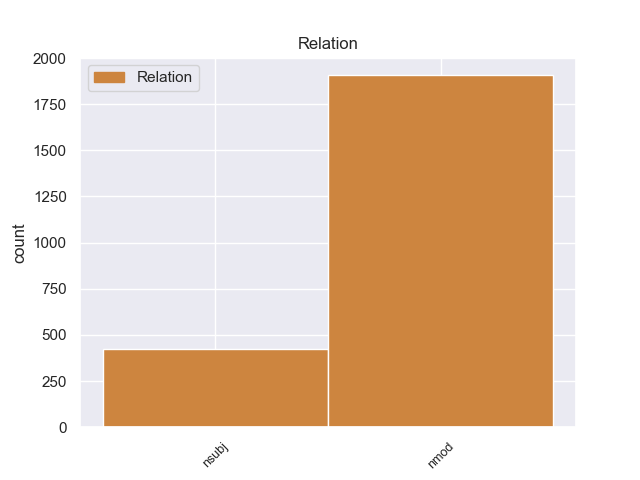
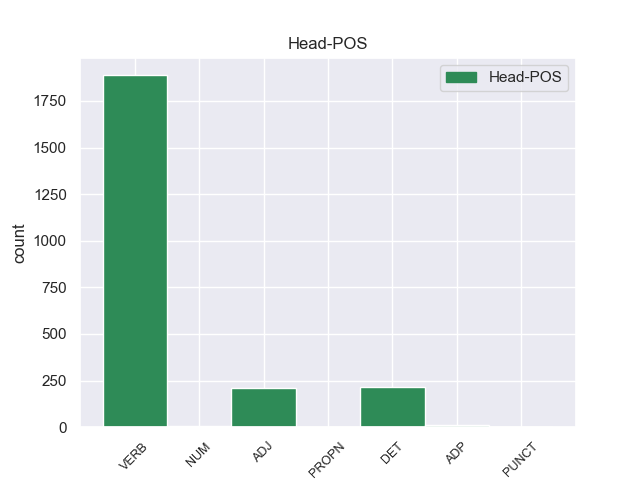
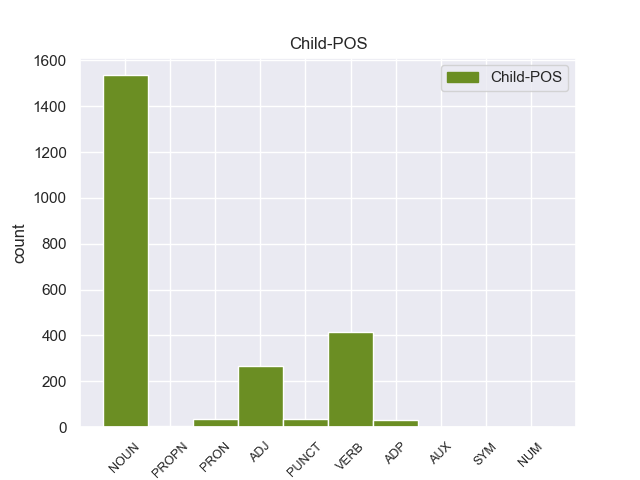

Distribution of features within this leaf



Agreement Rules sorted by frequency.
- When the dependent token is the nominal modifier(nmod) of the head token, and the head token is VERB and the dependent token is NOUN.
1 Το _ _ _ _ 0 _ _ _
2 άρθρο _ _ _ _ 0 _ _ _
3 9 _ _ _ _ 0 _ _ _
4 του _ _ _ _ 0 _ _ _
5 Πρωτοκόλλου πρωτοκόλλου NOUN _ Case=Acc|Gender=Fem|Number=Sing 8 nmod _ _
6 , _ _ _ _ 0 _ _ _
7 όπως _ _ _ _ 0 _ _ _
8 επεσήμανε επεσήμαν VERB _ Case=Acc|Gender=Fem|Number=Sing 0 _ _ _
9 με _ _ _ _ 0 _ _ _
10 αυστηρότητα _ _ _ _ 0 _ _ _
11 η _ _ _ _ 0 _ _ _
12 Πρόεδρος _ _ _ _ 0 _ _ _
13 Fontaine _ _ _ _ 0 _ _ _
14 σ _ _ _ _ 0 _ _ _
15 τον _ _ _ _ 0 _ _ _
16 Εισαγγελέα _ _ _ _ 0 _ _ _
17 , _ _ _ _ 0 _ _ _
18 μας _ _ _ _ 0 _ _ _
19 απαλλάσσει _ _ _ _ 0 _ _ _
20 τελείως _ _ _ _ 0 _ _ _
21 από _ _ _ _ 0 _ _ _
22 οποιαδήποτε _ _ _ _ 0 _ _ _
23 νομική _ _ _ _ 0 _ _ _
24 διαδικασία _ _ _ _ 0 _ _ _
25 σε _ _ _ _ 0 _ _ _
26 σχέση _ _ _ _ 0 _ _ _
27 με _ _ _ _ 0 _ _ _
28 την _ _ _ _ 0 _ _ _
29 έκφραση _ _ _ _ 0 _ _ _
30 γνώμης _ _ _ _ 0 _ _ _
31 ή _ _ _ _ 0 _ _ _
32 ψήφου _ _ _ _ 0 _ _ _
33 κατά _ _ _ _ 0 _ _ _
34 την _ _ _ _ 0 _ _ _
35 άσκηση _ _ _ _ 0 _ _ _
36 των _ _ _ _ 0 _ _ _
37 καθηκόντων _ _ _ _ 0 _ _ _
38 μας _ _ _ _ 0 _ _ _
39 ως _ _ _ _ 0 _ _ _
40 μέλη _ _ _ _ 0 _ _ _
41 αυτού _ _ _ _ 0 _ _ _
42 του _ _ _ _ 0 _ _ _
43 Κοινοβουλίου _ _ _ _ 0 _ _ _
44 . _ _ _ _ 0 _ _ _
1 Το _ _ _ _ 0 _ _ _
2 άρθρο _ _ _ _ 0 _ _ _
3 9 _ _ _ _ 0 _ _ _
4 του _ _ _ _ 0 _ _ _
5 Πρωτοκόλλου _ _ _ _ 0 _ _ _
6 , _ _ _ _ 0 _ _ _
7 όπως _ _ _ _ 0 _ _ _
8 επεσήμανε επεσήμαν VERB _ Case=Acc|Gender=Fem|Number=Sing 0 _ _ _
9 με _ _ _ _ 0 _ _ _
10 αυστηρότητα _ _ _ _ 0 _ _ _
11 η _ _ _ _ 0 _ _ _
12 Πρόεδρος πρόεδρο VERB _ Case=Acc|Gender=Fem|Number=Sing 8 nmod _ _
13 Fontaine _ _ _ _ 0 _ _ _
14 σ _ _ _ _ 0 _ _ _
15 τον _ _ _ _ 0 _ _ _
16 Εισαγγελέα _ _ _ _ 0 _ _ _
17 , _ _ _ _ 0 _ _ _
18 μας _ _ _ _ 0 _ _ _
19 απαλλάσσει _ _ _ _ 0 _ _ _
20 τελείως _ _ _ _ 0 _ _ _
21 από _ _ _ _ 0 _ _ _
22 οποιαδήποτε _ _ _ _ 0 _ _ _
23 νομική _ _ _ _ 0 _ _ _
24 διαδικασία _ _ _ _ 0 _ _ _
25 σε _ _ _ _ 0 _ _ _
26 σχέση _ _ _ _ 0 _ _ _
27 με _ _ _ _ 0 _ _ _
28 την _ _ _ _ 0 _ _ _
29 έκφραση _ _ _ _ 0 _ _ _
30 γνώμης _ _ _ _ 0 _ _ _
31 ή _ _ _ _ 0 _ _ _
32 ψήφου _ _ _ _ 0 _ _ _
33 κατά _ _ _ _ 0 _ _ _
34 την _ _ _ _ 0 _ _ _
35 άσκηση _ _ _ _ 0 _ _ _
36 των _ _ _ _ 0 _ _ _
37 καθηκόντων _ _ _ _ 0 _ _ _
38 μας _ _ _ _ 0 _ _ _
39 ως _ _ _ _ 0 _ _ _
40 μέλη _ _ _ _ 0 _ _ _
41 αυτού _ _ _ _ 0 _ _ _
42 του _ _ _ _ 0 _ _ _
43 Κοινοβουλίου _ _ _ _ 0 _ _ _
44 . _ _ _ _ 0 _ _ _
1 Ο _ _ _ _ 0 _ _ _
2 Χάουμε _ _ _ _ 0 _ _ _
3 Μάτας μάτας NOUN _ Case=Acc|Gender=Fem|Number=Sing 5 nsubj _ _
4 είχε _ _ _ _ 0 _ _ _
5 λάβει λάβει VERB _ Case=Acc|Gender=Fem|Number=Sing 0 _ _ _
6 παρανόμως _ _ _ _ 0 _ _ _
7 500.000 _ _ _ _ 0 _ _ _
8 ευρώ _ _ _ _ 0 _ _ _
9 ( _ _ _ _ 0 _ _ _
10 δημόσια _ _ _ _ 0 _ _ _
11 χρήματα _ _ _ _ 0 _ _ _
12 ) _ _ _ _ 0 _ _ _
13 , _ _ _ _ 0 _ _ _
14 για _ _ _ _ 0 _ _ _
15 να _ _ _ _ 0 _ _ _
16 πληρώσει _ _ _ _ 0 _ _ _
17 δημοσιογράφο _ _ _ _ 0 _ _ _
18 που _ _ _ _ 0 _ _ _
19 έγραφε _ _ _ _ 0 _ _ _
20 τις _ _ _ _ 0 _ _ _
21 ομιλίες _ _ _ _ 0 _ _ _
22 του _ _ _ _ 0 _ _ _
23 . _ _ _ _ 0 _ _ _
1 Το _ _ _ _ 0 _ _ _
2 άρθρο _ _ _ _ 0 _ _ _
3 9 _ _ _ _ 0 _ _ _
4 του _ _ _ _ 0 _ _ _
5 Πρωτοκόλλου _ _ _ _ 0 _ _ _
6 , _ _ _ _ 0 _ _ _
7 όπως _ _ _ _ 0 _ _ _
8 επεσήμανε επεσήμαν VERB _ Case=Acc|Gender=Fem|Number=Sing 0 _ _ _
9 με _ _ _ _ 0 _ _ _
10 αυστηρότητα _ _ _ _ 0 _ _ _
11 η _ _ _ _ 0 _ _ _
12 Πρόεδρος _ _ _ _ 0 _ _ _
13 Fontaine _ _ _ _ 0 _ _ _
14 σ _ _ _ _ 0 _ _ _
15 τον _ _ _ _ 0 _ _ _
16 Εισαγγελέα _ _ _ _ 0 _ _ _
17 , _ _ _ _ 0 _ _ _
18 μας _ _ _ _ 0 _ _ _
19 απαλλάσσει _ _ _ _ 0 _ _ _
20 τελείως _ _ _ _ 0 _ _ _
21 από _ _ _ _ 0 _ _ _
22 οποιαδήποτε _ _ _ _ 0 _ _ _
23 νομική _ _ _ _ 0 _ _ _
24 διαδικασία _ _ _ _ 0 _ _ _
25 σε _ _ _ _ 0 _ _ _
26 σχέση _ _ _ _ 0 _ _ _
27 με _ _ _ _ 0 _ _ _
28 την _ _ _ _ 0 _ _ _
29 έκφραση _ _ _ _ 0 _ _ _
30 γνώμης _ _ _ _ 0 _ _ _
31 ή _ _ _ _ 0 _ _ _
32 ψήφου _ _ _ _ 0 _ _ _
33 κατά _ _ _ _ 0 _ _ _
34 την _ _ _ _ 0 _ _ _
35 άσκηση _ _ _ _ 0 _ _ _
36 των _ _ _ _ 0 _ _ _
37 καθηκόντων _ _ _ _ 0 _ _ _
38 μας _ _ _ _ 0 _ _ _
39 ως _ _ _ _ 0 _ _ _
40 μέλη _ _ _ _ 0 _ _ _
41 αυτού _ _ _ _ 0 _ _ _
42 του _ _ _ _ 0 _ _ _
43 Κοινοβουλίου κοινοβουλίο ADJ _ Case=Acc|Gender=Fem|Number=Sing 8 nmod _ _
44 . _ _ _ _ 0 _ _ _
1 Το _ _ _ _ 0 _ _ _
2 άρθρο _ _ _ _ 0 _ _ _
3 9 _ _ _ _ 0 _ _ _
4 του _ _ _ _ 0 _ _ _
5 Πρωτοκόλλου _ _ _ _ 0 _ _ _
6 , _ _ _ _ 0 _ _ _
7 όπως _ _ _ _ 0 _ _ _
8 επεσήμανε _ _ _ _ 0 _ _ _
9 με _ _ _ _ 0 _ _ _
10 αυστηρότητα _ _ _ _ 0 _ _ _
11 η _ _ _ _ 0 _ _ _
12 Πρόεδρος _ _ _ _ 0 _ _ _
13 Fontaine _ _ _ _ 0 _ _ _
14 σ _ _ _ _ 0 _ _ _
15 τον _ _ _ _ 0 _ _ _
16 Εισαγγελέα _ _ _ _ 0 _ _ _
17 , _ _ _ _ 0 _ _ _
18 μας _ _ _ _ 0 _ _ _
19 απαλλάσσει _ _ _ _ 0 _ _ _
20 τελείως _ _ _ _ 0 _ _ _
21 από _ _ _ _ 0 _ _ _
22 οποιαδήποτε _ _ _ _ 0 _ _ _
23 νομική _ _ _ _ 0 _ _ _
24 διαδικασία διαδικασία DET _ Case=Acc|Gender=Fem|Number=Sing 0 _ _ _
25 σε _ _ _ _ 0 _ _ _
26 σχέση _ _ _ _ 0 _ _ _
27 με _ _ _ _ 0 _ _ _
28 την _ _ _ _ 0 _ _ _
29 έκφραση _ _ _ _ 0 _ _ _
30 γνώμης _ _ _ _ 0 _ _ _
31 ή _ _ _ _ 0 _ _ _
32 ψήφου ψήφο NOUN _ Case=Gen|Gender=Fem|Number=Sing 24 nmod _ _
33 κατά _ _ _ _ 0 _ _ _
34 την _ _ _ _ 0 _ _ _
35 άσκηση _ _ _ _ 0 _ _ _
36 των _ _ _ _ 0 _ _ _
37 καθηκόντων _ _ _ _ 0 _ _ _
38 μας _ _ _ _ 0 _ _ _
39 ως _ _ _ _ 0 _ _ _
40 μέλη _ _ _ _ 0 _ _ _
41 αυτού _ _ _ _ 0 _ _ _
42 του _ _ _ _ 0 _ _ _
43 Κοινοβουλίου _ _ _ _ 0 _ _ _
44 . _ _ _ _ 0 _ _ _
1 Σύμφωνα _ _ _ _ 0 _ _ _
2 με _ _ _ _ 0 _ _ _
3 το _ _ _ _ 0 _ _ _
4 άρθρο _ _ _ _ 0 _ _ _
5 10 _ _ _ _ 0 _ _ _
6 του _ _ _ _ 0 _ _ _
7 Πρωτοκόλλου _ _ _ _ 0 _ _ _
8 του _ _ _ _ 0 _ _ _
9 1965 _ _ _ _ 0 _ _ _
10 , _ _ _ _ 0 _ _ _
11 δεν _ _ _ _ 0 _ _ _
12 υφίσταται _ _ _ _ 0 _ _ _
13 σχετική _ _ _ _ 0 _ _ _
14 ασυλία _ _ _ _ 0 _ _ _
15 για _ _ _ _ 0 _ _ _
16 βουλευτή _ _ _ _ 0 _ _ _
17 της _ _ _ _ 0 _ _ _
18 Γαλλικής _ _ _ _ 0 _ _ _
19 Εθνοσυνέλευσης _ _ _ _ 0 _ _ _
20 ή _ _ _ _ 0 _ _ _
21 , _ _ _ _ 0 _ _ _
22 κατά _ _ _ _ 0 _ _ _
23 συνέπεια _ _ _ _ 0 _ _ _
24 , _ _ _ _ 0 _ _ _
25 για _ _ _ _ 0 _ _ _
26 γάλλο _ _ _ _ 0 _ _ _
27 βουλευτή βουλευτής NOUN _ Case=Gen|Gender=Fem|Number=Sing 33 nmod _ _
28 του _ _ _ _ 0 _ _ _
29 Ευρωπαϊκού _ _ _ _ 0 _ _ _
30 Κοινοβουλίου _ _ _ _ 0 _ _ _
31 σε _ _ _ _ 0 _ _ _
32 περίπτωση _ _ _ _ 0 _ _ _
33 δίωξης δίωξης ADJ _ Case=Acc|Gender=Fem|Number=Sing 0 _ _ _
34 για _ _ _ _ 0 _ _ _
35 κατηγορίες _ _ _ _ 0 _ _ _
36 αυτού _ _ _ _ 0 _ _ _
37 του _ _ _ _ 0 _ _ _
38 είδους _ _ _ _ 0 _ _ _
39 . _ _ _ _ 0 _ _ _
1 Με _ _ _ _ 0 _ _ _
2 αυτές _ _ _ _ 0 _ _ _
3 τις _ _ _ _ 0 _ _ _
4 κατηγορίες κατηγορίες VERB _ Case=Acc|Gender=Fem|Number=Sing 56 nsubj _ _
5 , _ _ _ _ 0 _ _ _
6 από _ _ _ _ 0 _ _ _
7 τις _ _ _ _ 0 _ _ _
8 οποίες _ _ _ _ 0 _ _ _
9 η _ _ _ _ 0 _ _ _
10 πρώτη _ _ _ _ 0 _ _ _
11 αφορά _ _ _ _ 0 _ _ _
12 λαθρεμπόριο _ _ _ _ 0 _ _ _
13 όπλων _ _ _ _ 0 _ _ _
14 κλπ. _ _ _ _ 0 _ _ _
15 , _ _ _ _ 0 _ _ _
16 και _ _ _ _ 0 _ _ _
17 βαρύνει _ _ _ _ 0 _ _ _
18 τόσο _ _ _ _ 0 _ _ _
19 τον _ _ _ _ 0 _ _ _
20 κ. _ _ _ _ 0 _ _ _
21 Pasqua _ _ _ _ 0 _ _ _
22 όσο _ _ _ _ 0 _ _ _
23 και _ _ _ _ 0 _ _ _
24 τον _ _ _ _ 0 _ _ _
25 κ. _ _ _ _ 0 _ _ _
26 Marchiani _ _ _ _ 0 _ _ _
27 , _ _ _ _ 0 _ _ _
28 ενώ _ _ _ _ 0 _ _ _
29 η _ _ _ _ 0 _ _ _
30 δεύτερη _ _ _ _ 0 _ _ _
31 στρέφεται _ _ _ _ 0 _ _ _
32 μόνον _ _ _ _ 0 _ _ _
33 εναντίον _ _ _ _ 0 _ _ _
34 του _ _ _ _ 0 _ _ _
35 κ. _ _ _ _ 0 _ _ _
36 Pasqua _ _ _ _ 0 _ _ _
37 , _ _ _ _ 0 _ _ _
38 οι _ _ _ _ 0 _ _ _
39 ανακριτές _ _ _ _ 0 _ _ _
40 δικαστές _ _ _ _ 0 _ _ _
41 ζητούν _ _ _ _ 0 _ _ _
42 την _ _ _ _ 0 _ _ _
43 άρση _ _ _ _ 0 _ _ _
44 της _ _ _ _ 0 _ _ _
45 βουλευτικής _ _ _ _ 0 _ _ _
46 ασυλίας _ _ _ _ 0 _ _ _
47 των _ _ _ _ 0 _ _ _
48 εν _ _ _ _ 0 _ _ _
49 λόγω _ _ _ _ 0 _ _ _
50 δύο _ _ _ _ 0 _ _ _
51 κυρίων _ _ _ _ 0 _ _ _
52 , _ _ _ _ 0 _ _ _
53 προκειμένου _ _ _ _ 0 _ _ _
54 να _ _ _ _ 0 _ _ _
55 τους _ _ _ _ 0 _ _ _
56 επιβληθούν επιβληθού VERB _ Case=Acc|Gender=Fem|Number=Sing 0 _ _ _
57 ορισμένα _ _ _ _ 0 _ _ _
58 μέτρα _ _ _ _ 0 _ _ _
59 δικαστικής _ _ _ _ 0 _ _ _
60 επιτήρησης _ _ _ _ 0 _ _ _
61 : _ _ _ _ 0 _ _ _
62 να _ _ _ _ 0 _ _ _
63 τους _ _ _ _ 0 _ _ _
64 απαγορευθεί _ _ _ _ 0 _ _ _
65 η _ _ _ _ 0 _ _ _
66 επαφή _ _ _ _ 0 _ _ _
67 με _ _ _ _ 0 _ _ _
68 διάφορους _ _ _ _ 0 _ _ _
69 μάρτυρες _ _ _ _ 0 _ _ _
70 ή _ _ _ _ 0 _ _ _
71 συγκατηγορουμένους _ _ _ _ 0 _ _ _
72 σ _ _ _ _ 0 _ _ _
73 τις _ _ _ _ 0 _ _ _
74 υποθέσεις _ _ _ _ 0 _ _ _
75 αυτές _ _ _ _ 0 _ _ _
76 και _ _ _ _ 0 _ _ _
77 η _ _ _ _ 0 _ _ _
78 μετάβαση _ _ _ _ 0 _ _ _
79 σε _ _ _ _ 0 _ _ _
80 διάφορες _ _ _ _ 0 _ _ _
81 χώρες _ _ _ _ 0 _ _ _
82 , _ _ _ _ 0 _ _ _
83 καθώς _ _ _ _ 0 _ _ _
84 και _ _ _ _ 0 _ _ _
85 να _ _ _ _ 0 _ _ _
86 τους _ _ _ _ 0 _ _ _
87 επιβληθεί _ _ _ _ 0 _ _ _
88 ενδεχομένως _ _ _ _ 0 _ _ _
89 η _ _ _ _ 0 _ _ _
90 καταβολή _ _ _ _ 0 _ _ _
91 εγγύησης _ _ _ _ 0 _ _ _
92 . _ _ _ _ 0 _ _ _
1 Αφενός _ _ _ _ 0 _ _ _
2 , _ _ _ _ 0 _ _ _
3 σ _ _ _ _ 0 _ _ _
4 την _ _ _ _ 0 _ _ _
5 αίτηση _ _ _ _ 0 _ _ _
6 λήψης _ _ _ _ 0 _ _ _
7 μέτρων _ _ _ _ 0 _ _ _
8 δικαστικής _ _ _ _ 0 _ _ _
9 επιτήρησης _ _ _ _ 0 _ _ _
10 δεν _ _ _ _ 0 _ _ _
11 διευκρινίζονται _ _ _ _ 0 _ _ _
12 οι _ _ _ _ 0 _ _ _
13 χώρες _ _ _ _ 0 _ _ _
14 τις _ _ _ _ 0 _ _ _
15 οποίες _ _ _ _ 0 _ _ _
16 θα _ _ _ _ 0 _ _ _
17 απαγορευθεί _ _ _ _ 0 _ _ _
18 να _ _ _ _ 0 _ _ _
19 επισκεφθούν επισκεφθού VERB _ Case=Acc|Gender=Fem|Number=Sing 0 _ _ _
20 οι _ _ _ _ 0 _ _ _
21 κατηγορούμενοι κατηγορούμενοι ADJ _ Case=Acc|Gender=Fem|Number=Sing 19 nsubj _ _
22 και _ _ _ _ 0 _ _ _
23 αφετέρου _ _ _ _ 0 _ _ _
24 , _ _ _ _ 0 _ _ _
25 ύστερα _ _ _ _ 0 _ _ _
26 από _ _ _ _ 0 _ _ _
27 απόφαση _ _ _ _ 0 _ _ _
28 του _ _ _ _ 0 _ _ _
29 Ακυρωτικού _ _ _ _ 0 _ _ _
30 Δικαστηρίου _ _ _ _ 0 _ _ _
31 , _ _ _ _ 0 _ _ _
32 το _ _ _ _ 0 _ _ _
33 εύρος _ _ _ _ 0 _ _ _
34 της _ _ _ _ 0 _ _ _
35 διαδικασίας _ _ _ _ 0 _ _ _
36 μένει _ _ _ _ 0 _ _ _
37 να _ _ _ _ 0 _ _ _
38 προσδιοριστεί _ _ _ _ 0 _ _ _
39 με _ _ _ _ 0 _ _ _
40 απόφαση _ _ _ _ 0 _ _ _
41 του _ _ _ _ 0 _ _ _
42 Εφετείου _ _ _ _ 0 _ _ _
43 . _ _ _ _ 0 _ _ _
1 Εδώ _ _ _ _ 0 _ _ _
2 και _ _ _ _ 0 _ _ _
3 ενάμισι _ _ _ _ 0 _ _ _
4 χρόνο _ _ _ _ 0 _ _ _
5 κοιτάζουμε _ _ _ _ 0 _ _ _
6 άπραγοι _ _ _ _ 0 _ _ _
7 τον _ _ _ _ 0 _ _ _
8 εντελώς _ _ _ _ 0 _ _ _
9 άνισο _ _ _ _ 0 _ _ _
10 πόλεμο _ _ _ _ 0 _ _ _
11 που _ _ _ _ 0 _ _ _
12 διεξάγουν διεξάγουν DET _ Case=Acc|Gender=Fem|Number=Sing 0 _ _ _
13 αυτοί _ _ _ _ 0 _ _ _
14 οι _ _ _ _ 0 _ _ _
15 δύο _ _ _ _ 0 _ _ _
16 αντίπαλοι _ _ _ _ 0 _ _ _
17 μεταξύ _ _ _ _ 0 _ _ _
18 τους _ _ _ _ 0 _ _ _
19 , _ _ _ _ 0 _ _ _
20 κοιτάζουμε _ _ _ _ 0 _ _ _
21 τα _ _ _ _ 0 _ _ _
22 τανκς _ _ _ _ 0 _ _ _
23 των _ _ _ _ 0 _ _ _
24 Ισραηλινών _ _ _ _ 0 _ _ _
25 να _ _ _ _ 0 _ _ _
26 καταστρέφουν καταστρέφουν VERB _ Case=Acc|Gender=Fem|Number=Sing 12 nmod _ _
27 σπίτια _ _ _ _ 0 _ _ _
28 και _ _ _ _ 0 _ _ _
29 να _ _ _ _ 0 _ _ _
30 σκοτώνουν _ _ _ _ 0 _ _ _
31 παλαιστίνιους _ _ _ _ 0 _ _ _
32 πολίτες _ _ _ _ 0 _ _ _
33 . _ _ _ _ 0 _ _ _
1 Ο _ _ _ _ 0 _ _ _
2 λόγος _ _ _ _ 0 _ _ _
3 γίνεται _ _ _ _ 0 _ _ _
4 για _ _ _ _ 0 _ _ _
5 τον _ _ _ _ 0 _ _ _
6 Χάουμε _ _ _ _ 0 _ _ _
7 Μάτας _ _ _ _ 0 _ _ _
8 , _ _ _ _ 0 _ _ _
9 ο _ _ _ _ 0 _ _ _
10 οποίος _ _ _ _ 0 _ _ _
11 ήταν _ _ _ _ 0 _ _ _
12 Υπουργός _ _ _ _ 0 _ _ _
13 Περιβάλλοντος _ _ _ _ 0 _ _ _
14 τα _ _ _ _ 0 _ _ _
15 έτη ο ADJ _ Case=Acc|Gender=Fem|Number=Sing 0 _ _ _
16 2000-2003 _ _ _ _ 0 _ _ _
17 και _ _ _ _ 0 _ _ _
18 Περιφερειακός _ _ _ _ 0 _ _ _
19 Πρωθυπουργός _ _ _ _ 0 _ _ _
20 των _ _ _ _ 0 _ _ _
21 Βαλεαρίδων _ _ _ _ 0 _ _ _
22 Νήσων νήσός ADJ _ Case=Acc|Gender=Fem|Number=Sing 15 nmod _ _
23 κατά _ _ _ _ 0 _ _ _
24 την _ _ _ _ 0 _ _ _
25 περίοδο _ _ _ _ 0 _ _ _
26 2003-2007 _ _ _ _ 0 _ _ _
27 . _ _ _ _ 0 _ _ _
1 Ο _ _ _ _ 0 _ _ _
2 δημοσιογράφος _ _ _ _ 0 _ _ _
3 , _ _ _ _ 0 _ _ _
4 ο _ _ _ _ 0 _ _ _
5 οποίος _ _ _ _ 0 _ _ _
6 έγραφε έγραφε VERB _ Case=Acc|Gender=Fem|Number=Sing 13 nmod _ _
7 τις _ _ _ _ 0 _ _ _
8 ομιλίες _ _ _ _ 0 _ _ _
9 του _ _ _ _ 0 _ _ _
10 Χάουμε _ _ _ _ 0 _ _ _
11 Μάτας _ _ _ _ 0 _ _ _
12 και _ _ _ _ 0 _ _ _
13 έπλεκε ο ADJ _ Case=Acc|Gender=Fem|Number=Sing 0 _ _ _
14 το _ _ _ _ 0 _ _ _
15 εγκώμιο _ _ _ _ 0 _ _ _
16 του _ _ _ _ 0 _ _ _
17 τελευταίου _ _ _ _ 0 _ _ _
18 , _ _ _ _ 0 _ _ _
19 καταδικάστηκε _ _ _ _ 0 _ _ _
20 σε _ _ _ _ 0 _ _ _
21 κάθειρξη _ _ _ _ 0 _ _ _
22 τριών _ _ _ _ 0 _ _ _
23 ετών _ _ _ _ 0 _ _ _
24 και _ _ _ _ 0 _ _ _
25 εννέα _ _ _ _ 0 _ _ _
26 μηνών _ _ _ _ 0 _ _ _
27 . _ _ _ _ 0 _ _ _
1 Τα _ _ _ _ 0 _ _ _
2 εγκλήματα _ _ _ _ 0 _ _ _
3 είναι _ _ _ _ 0 _ _ _
4 σοβαρά _ _ _ _ 0 _ _ _
5 και _ _ _ _ 0 _ _ _
6 ανήκουν _ _ _ _ 0 _ _ _
7 σε _ _ _ _ 0 _ _ _
8 μια _ _ _ _ 0 _ _ _
9 κατηγορία _ _ _ _ 0 _ _ _
10 για _ _ _ _ 0 _ _ _
11 την _ _ _ _ 0 _ _ _
12 οποία _ _ _ _ 0 _ _ _
13 κανονικά _ _ _ _ 0 _ _ _
14 δεν _ _ _ _ 0 _ _ _
15 προσφέρεται _ _ _ _ 0 _ _ _
16 βουλευτική _ _ _ _ 0 _ _ _
17 ασυλία _ _ _ _ 0 _ _ _
18 , _ _ _ _ 0 _ _ _
19 επειδή _ _ _ _ 0 _ _ _
20 δεν _ _ _ _ 0 _ _ _
21 αφορούν _ _ _ _ 0 _ _ _
22 τις _ _ _ _ 0 _ _ _
23 συνήθεις _ _ _ _ 0 _ _ _
24 και _ _ _ _ 0 _ _ _
25 προσήκουσες _ _ _ _ 0 _ _ _
26 δραστηριότητες _ _ _ _ 0 _ _ _
27 βουλευτή _ _ _ _ 0 _ _ _
28 του _ _ _ _ 0 _ _ _
29 Σώματος _ _ _ _ 0 _ _ _
30 , _ _ _ _ 0 _ _ _
31 ή _ _ _ _ 0 _ _ _
32 πολιτικού _ _ _ _ 0 _ _ _
33 που _ _ _ _ 0 _ _ _
34 δραστηριοποιείται δραστηριοποιείται DET _ Case=Acc|Gender=Fem|Number=Sing 0 _ _ _
35 σε _ _ _ _ 0 _ _ _
36 μια _ _ _ _ 0 _ _ _
37 δημοκρατική δημοκρατιός ADJ _ Case=Acc|Gender=Fem|Number=Sing 34 nmod _ _
38 κοινωνία _ _ _ _ 0 _ _ _
39 . _ _ _ _ 0 _ _ _
1 Επίσης _ _ _ _ 0 _ _ _
2 , _ _ _ _ 0 _ _ _
3 περίπου _ _ _ _ 0 _ _ _
4 7,5 _ _ _ _ 0 _ _ _
5 εκατομμύρια _ _ _ _ 0 _ _ _
6 Κινέζοι _ _ _ _ 0 _ _ _
7 έχουν _ _ _ _ 0 _ _ _
8 ανταποκριθεί ανταποκριθεί VERB _ Case=Acc|Gender=Fem|Number=Sing 0 _ _ _
9 σ _ _ _ _ 0 _ _ _
10 τα _ _ _ _ 0 _ _ _
11 κίνητρα _ _ _ _ 0 _ _ _
12 της _ _ _ _ 0 _ _ _
13 κυβέρνησης ο PRON _ Case=Acc|Gender=Fem|Number=Sing 8 nmod _ _
14 για _ _ _ _ 0 _ _ _
15 αποικισμό _ _ _ _ 0 _ _ _
16 του _ _ _ _ 0 _ _ _
17 Θιβέτ _ _ _ _ 0 _ _ _
18 , _ _ _ _ 0 _ _ _
19 ξεπερνώντας _ _ _ _ 0 _ _ _
20 τους _ _ _ _ 0 _ _ _
21 6 _ _ _ _ 0 _ _ _
22 εκατομμύρια _ _ _ _ 0 _ _ _
23 Θιβετιανούς _ _ _ _ 0 _ _ _
24 . _ _ _ _ 0 _ _ _
1 Δυστυχώς _ _ _ _ 0 _ _ _
2 τα _ _ _ _ 0 _ _ _
3 φύλλα _ _ _ _ 0 _ _ _
4 του _ _ _ _ 0 _ _ _
5 Τύπου τύπου NOUN _ Case=Acc|Gender=Fem|Number=Sing 6 nsubj _ _
6 γεμίζουν γεμίζουν DET _ Case=Acc|Gender=Fem|Number=Sing 0 _ _ _
7 πάντα _ _ _ _ 0 _ _ _
8 με _ _ _ _ 0 _ _ _
9 οτιδήποτε _ _ _ _ 0 _ _ _
10 δεν _ _ _ _ 0 _ _ _
11 πάει _ _ _ _ 0 _ _ _
12 καλά _ _ _ _ 0 _ _ _
13 σ _ _ _ _ 0 _ _ _
14 την _ _ _ _ 0 _ _ _
15 Ευρώπη _ _ _ _ 0 _ _ _
16 και _ _ _ _ 0 _ _ _
17 όταν _ _ _ _ 0 _ _ _
18 η _ _ _ _ 0 _ _ _
19 πολιτική _ _ _ _ 0 _ _ _
20 μας _ _ _ _ 0 _ _ _
21 είναι _ _ _ _ 0 _ _ _
22 επιτυχής _ _ _ _ 0 _ _ _
23 δεν _ _ _ _ 0 _ _ _
24 αναφέρεται _ _ _ _ 0 _ _ _
25 σχεδόν _ _ _ _ 0 _ _ _
26 καθόλου _ _ _ _ 0 _ _ _
27 . _ _ _ _ 0 _ _ _
1 Τα _ _ _ _ 0 _ _ _
2 μέλη _ _ _ _ 0 _ _ _
3 της _ _ _ _ 0 _ _ _
4 κυβέρνησης _ _ _ _ 0 _ _ _
5 Καλογερόπουλου _ _ _ _ 0 _ _ _
6 διαφώνησαν διαφώνησαν VERB _ Case=Acc|Gender=Fem|Number=Sing 0 _ _ _
7 μεταξύ _ _ _ _ 0 _ _ _
8 τους _ _ _ _ 0 _ _ _
9 ως _ _ _ _ 0 _ _ _
10 προς _ _ _ _ 0 _ _ _
11 την _ _ _ _ 0 _ _ _
12 πολιτική ο ADP _ Case=Acc|Gender=Fem|Number=Sing 6 nmod _ _
13 που _ _ _ _ 0 _ _ _
14 έπρεπε _ _ _ _ 0 _ _ _
15 να _ _ _ _ 0 _ _ _
16 ακολουθηθεί _ _ _ _ 0 _ _ _
17 , _ _ _ _ 0 _ _ _
18 οδηγώντας _ _ _ _ 0 _ _ _
19 την _ _ _ _ 0 _ _ _
20 έτσι _ _ _ _ 0 _ _ _
21 σε _ _ _ _ 0 _ _ _
22 παραίτηση _ _ _ _ 0 _ _ _
23 . _ _ _ _ 0 _ _ _
1 Έγιναν _ _ _ _ 0 _ _ _
2 βουλευτικές βουλευτικέ VERB _ Case=Acc|Gender=Fem|Number=Sing 0 _ _ _
3 εκλογές ο PUNCT _ Case=Acc|Gender=Fem|Number=Sing 2 nmod _ _
4 την _ _ _ _ 0 _ _ _
5 1_Νοεμβρίου_1920 _ _ _ _ 0 _ _ _
6 . _ _ _ _ 0 _ _ _
1 Το _ _ _ _ 0 _ _ _
2 ευρώ _ _ _ _ 0 _ _ _
3 είναι _ _ _ _ 0 _ _ _
4 επίσης _ _ _ _ 0 _ _ _
5 επιτυχία _ _ _ _ 0 _ _ _
6 της _ _ _ _ 0 _ _ _
7 Ευρωπαϊκής _ _ _ _ 0 _ _ _
8 Κεντρικής _ _ _ _ 0 _ _ _
9 Τράπεζας _ _ _ _ 0 _ _ _
10 , _ _ _ _ 0 _ _ _
11 των _ _ _ _ 0 _ _ _
12 χρηματοπιστωτικών _ _ _ _ 0 _ _ _
13 ιδρυμάτων _ _ _ _ 0 _ _ _
14 , _ _ _ _ 0 _ _ _
15 των _ _ _ _ 0 _ _ _
16 εκατοντάδων _ _ _ _ 0 _ _ _
17 χιλιάδων _ _ _ _ 0 _ _ _
18 ανώνυμων _ _ _ _ 0 _ _ _
19 πολιτών _ _ _ _ 0 _ _ _
20 που _ _ _ _ 0 _ _ _
21 δούλεψαν δούλεψαν VERB _ Case=Acc|Gender=Fem|Number=Sing 0 _ _ _
22 την _ _ _ _ 0 _ _ _
23 πρώτη _ _ _ _ 0 _ _ _
24 Ιανουαρίου _ _ _ _ 0 _ _ _
25 , _ _ _ _ 0 _ _ _
26 και _ _ _ _ 0 _ _ _
27 επιτυχία _ _ _ _ 0 _ _ _
28 επίσης _ _ _ _ 0 _ _ _
29 , _ _ _ _ 0 _ _ _
30 πρέπει _ _ _ _ 0 _ _ _
31 να _ _ _ _ 0 _ _ _
32 το _ _ _ _ 0 _ _ _
33 αναγνωρίσουμε _ _ _ _ 0 _ _ _
34 , _ _ _ _ 0 _ _ _
35 του _ _ _ _ 0 _ _ _
36 Pierre _ _ _ _ 0 _ _ _
37 Werner _ _ _ _ 0 _ _ _
38 , _ _ _ _ 0 _ _ _
39 του _ _ _ _ 0 _ _ _
40 Valéry _ _ _ _ 0 _ _ _
41 Giscard _ _ _ _ 0 _ _ _
42 d' _ _ _ _ 0 _ _ _
43 Estaing _ _ _ _ 0 _ _ _
44 , _ _ _ _ 0 _ _ _
45 του _ _ _ _ 0 _ _ _
46 Helmut _ _ _ _ 0 _ _ _
47 Schmidt schmidt PRON _ Case=Gen|Gender=Fem|Number=Sing 21 nsubj _ _
48 , _ _ _ _ 0 _ _ _
49 του _ _ _ _ 0 _ _ _
50 François _ _ _ _ 0 _ _ _
51 Mitterrand _ _ _ _ 0 _ _ _
52 , _ _ _ _ 0 _ _ _
53 του _ _ _ _ 0 _ _ _
54 Helmut _ _ _ _ 0 _ _ _
55 Kohl _ _ _ _ 0 _ _ _
56 , _ _ _ _ 0 _ _ _
57 του _ _ _ _ 0 _ _ _
58 Ruud _ _ _ _ 0 _ _ _
59 Lubbers _ _ _ _ 0 _ _ _
60 , _ _ _ _ 0 _ _ _
61 του _ _ _ _ 0 _ _ _
62 Giulio _ _ _ _ 0 _ _ _
63 Andreotti _ _ _ _ 0 _ _ _
64 , _ _ _ _ 0 _ _ _
65 του _ _ _ _ 0 _ _ _
66 John _ _ _ _ 0 _ _ _
67 Major _ _ _ _ 0 _ _ _
68 , _ _ _ _ 0 _ _ _
69 του _ _ _ _ 0 _ _ _
70 Felipe _ _ _ _ 0 _ _ _
71 Gonzαlez _ _ _ _ 0 _ _ _
72 και _ _ _ _ 0 _ _ _
73 επίσης _ _ _ _ 0 _ _ _
74 του _ _ _ _ 0 _ _ _
75 Jacques _ _ _ _ 0 _ _ _
76 Santer _ _ _ _ 0 _ _ _
77 , _ _ _ _ 0 _ _ _
78 ως _ _ _ _ 0 _ _ _
79 Προέδρου _ _ _ _ 0 _ _ _
80 της _ _ _ _ 0 _ _ _
81 Επιτροπής _ _ _ _ 0 _ _ _
82 . _ _ _ _ 0 _ _ _
1 Η _ _ _ _ 0 _ _ _
2 εν _ _ _ _ 0 _ _ _
3 λόγω _ _ _ _ 0 _ _ _
4 κοινοποίηση _ _ _ _ 0 _ _ _
5 διαβιβάστηκε διαβιβάστηκε VERB _ Case=Acc|Gender=Fem|Number=Sing 0 _ _ _
6 αρχικά αρχικά ADP _ Case=Acc|Definite=Def|Gender=Fem|Number=Sing|PronType=Art 5 nsubj _ _
7 σ _ _ _ _ 0 _ _ _
8 τον _ _ _ _ 0 _ _ _
9 Εισαγγελέα _ _ _ _ 0 _ _ _
10 Πλημμελειοδικών _ _ _ _ 0 _ _ _
11 , _ _ _ _ 0 _ _ _
12 κατόπιν _ _ _ _ 0 _ _ _
13 σ _ _ _ _ 0 _ _ _
14 τον _ _ _ _ 0 _ _ _
15 Εισαγγελέα _ _ _ _ 0 _ _ _
16 Εφετών _ _ _ _ 0 _ _ _
17 του _ _ _ _ 0 _ _ _
18 Παρισιού _ _ _ _ 0 _ _ _
19 , _ _ _ _ 0 _ _ _
20 ο _ _ _ _ 0 _ _ _
21 οποίος _ _ _ _ 0 _ _ _
22 και _ _ _ _ 0 _ _ _
23 την _ _ _ _ 0 _ _ _
24 απέστειλε _ _ _ _ 0 _ _ _
25 σ _ _ _ _ 0 _ _ _
26 τον _ _ _ _ 0 _ _ _
27 Υπουργό _ _ _ _ 0 _ _ _
28 Δικαιοσύνης _ _ _ _ 0 _ _ _
29 και _ _ _ _ 0 _ _ _
30 μέσω _ _ _ _ 0 _ _ _
31 αυτού _ _ _ _ 0 _ _ _
32 διαβιβάστηκε _ _ _ _ 0 _ _ _
33 σ _ _ _ _ 0 _ _ _
34 το _ _ _ _ 0 _ _ _
35 Ευρωπαϊκό _ _ _ _ 0 _ _ _
36 Κοινοβούλιο _ _ _ _ 0 _ _ _
37 . _ _ _ _ 0 _ _ _
1 Οι _ _ _ _ 0 _ _ _
2 προϋποθέσεις _ _ _ _ 0 _ _ _
3 που _ _ _ _ 0 _ _ _
4 έθεσε έθεσε ADJ _ Case=Acc|Gender=Fem|Number=Sing 0 _ _ _
5 η _ _ _ _ 0 _ _ _
6 Βόρεια _ _ _ _ 0 _ _ _
7 Κορέα κορέα NOUN _ Case=Acc|Gender=Fem|Number=Sing 4 nsubj _ _
8 για _ _ _ _ 0 _ _ _
9 την _ _ _ _ 0 _ _ _
10 έναρξη _ _ _ _ 0 _ _ _
11 συνομιλιών _ _ _ _ 0 _ _ _
12 . _ _ _ _ 0 _ _ _
1 Μετά _ _ _ _ 0 _ _ _
2 την _ _ _ _ 0 _ _ _
3 εισβολή _ _ _ _ 0 _ _ _
4 τους _ _ _ _ 0 _ _ _
5 σ _ _ _ _ 0 _ _ _
6 το _ _ _ _ 0 _ _ _
7 Θιβέτ _ _ _ _ 0 _ _ _
8 το _ _ _ _ 0 _ _ _
9 1950 _ _ _ _ 0 _ _ _
10 , _ _ _ _ 0 _ _ _
11 οι _ _ _ _ 0 _ _ _
12 Κινέζοι _ _ _ _ 0 _ _ _
13 κομμουνιστές _ _ _ _ 0 _ _ _
14 σκότωσαν σκότωσαν VERB _ Case=Acc|Gender=Fem|Number=Sing 0 _ _ _
15 πάνω _ _ _ _ 0 _ _ _
16 από _ _ _ _ 0 _ _ _
17 ένα _ _ _ _ 0 _ _ _
18 εκατομμύριο _ _ _ _ 0 _ _ _
19 Θιβετιανούς _ _ _ _ 0 _ _ _
20 , _ _ _ _ 0 _ _ _
21 κατέστρεψαν _ _ _ _ 0 _ _ _
22 περισσότερα _ _ _ _ 0 _ _ _
23 από _ _ _ _ 0 _ _ _
24 6.000 6.000 PUNCT _ Case=Acc|Gender=Fem|Number=Sing 14 nsubj _ _
25 μοναστήρια _ _ _ _ 0 _ _ _
26 , _ _ _ _ 0 _ _ _
27 και _ _ _ _ 0 _ _ _
28 μετέτρεψαν _ _ _ _ 0 _ _ _
29 τη _ _ _ _ 0 _ _ _
30 βορειοανατολική _ _ _ _ 0 _ _ _
31 επαρχία _ _ _ _ 0 _ _ _
32 , _ _ _ _ 0 _ _ _
33 την _ _ _ _ 0 _ _ _
34 Amdo _ _ _ _ 0 _ _ _
35 , _ _ _ _ 0 _ _ _
36 σε _ _ _ _ 0 _ _ _
37 ένα _ _ _ _ 0 _ _ _
38 γκούλαγκ _ _ _ _ 0 _ _ _
39 που _ _ _ _ 0 _ _ _
40 στεγάζει _ _ _ _ 0 _ _ _
41 σύμφωνα _ _ _ _ 0 _ _ _
42 με _ _ _ _ 0 _ _ _
43 εκτιμήσεις _ _ _ _ 0 _ _ _
44 έως _ _ _ _ 0 _ _ _
45 και _ _ _ _ 0 _ _ _
46 δέκα _ _ _ _ 0 _ _ _
47 εκατομμύρια _ _ _ _ 0 _ _ _
48 ανθρώπους _ _ _ _ 0 _ _ _
49 . _ _ _ _ 0 _ _ _
1 Ο _ _ _ _ 0 _ _ _
2 δημοσιογράφος _ _ _ _ 0 _ _ _
3 , _ _ _ _ 0 _ _ _
4 ο _ _ _ _ 0 _ _ _
5 οποίος _ _ _ _ 0 _ _ _
6 έγραφε _ _ _ _ 0 _ _ _
7 τις _ _ _ _ 0 _ _ _
8 ομιλίες _ _ _ _ 0 _ _ _
9 του _ _ _ _ 0 _ _ _
10 Χάουμε _ _ _ _ 0 _ _ _
11 Μάτας _ _ _ _ 0 _ _ _
12 και _ _ _ _ 0 _ _ _
13 έπλεκε _ _ _ _ 0 _ _ _
14 το _ _ _ _ 0 _ _ _
15 εγκώμιο _ _ _ _ 0 _ _ _
16 του _ _ _ _ 0 _ _ _
17 τελευταίου _ _ _ _ 0 _ _ _
18 , _ _ _ _ 0 _ _ _
19 καταδικάστηκε _ _ _ _ 0 _ _ _
20 σε _ _ _ _ 0 _ _ _
21 κάθειρξη κάθειρξός ADP _ Case=Acc|Gender=Fem|Number=Sing 0 _ _ _
22 τριών τριών NOUN _ Case=Acc|Gender=Fem|Number=Sing 21 nmod _ _
23 ετών _ _ _ _ 0 _ _ _
24 και _ _ _ _ 0 _ _ _
25 εννέα _ _ _ _ 0 _ _ _
26 μηνών _ _ _ _ 0 _ _ _
27 . _ _ _ _ 0 _ _ _
1 Σ _ _ _ _ 0 _ _ _
2 τις _ _ _ _ 0 _ _ _
3 29_Αυγούστου _ _ _ _ 0 _ _ _
4 , _ _ _ _ 0 _ _ _
5 ο _ _ _ _ 0 _ _ _
6 επικεφαλής _ _ _ _ 0 _ _ _
7 του _ _ _ _ 0 _ _ _
8 Θιβετιανού _ _ _ _ 0 _ _ _
9 συνασπισμού _ _ _ _ 0 _ _ _
10 , _ _ _ _ 0 _ _ _
11 Jampal jζω VERB _ Case=Gen|Gender=Neut|Number=Sing 18 nsubj _ _
12 Chosang _ _ _ _ 0 _ _ _
13 , _ _ _ _ 0 _ _ _
14 ανέφερε _ _ _ _ 0 _ _ _
15 πως _ _ _ _ 0 _ _ _
16 η _ _ _ _ 0 _ _ _
17 Κίνα _ _ _ _ 0 _ _ _
18 δημιούργησε δημιούργησε DET _ Case=Acc|Gender=Fem|Number=Sing 0 _ _ _
19 " _ _ _ _ 0 _ _ _
20 μία _ _ _ _ 0 _ _ _
21 νέα _ _ _ _ 0 _ _ _
22 μορφή _ _ _ _ 0 _ _ _
23 απαρτχάιντ _ _ _ _ 0 _ _ _
24 " _ _ _ _ 0 _ _ _
25 σ _ _ _ _ 0 _ _ _
26 το _ _ _ _ 0 _ _ _
27 Θιβέτ _ _ _ _ 0 _ _ _
28 επειδή _ _ _ _ 0 _ _ _
29 " _ _ _ _ 0 _ _ _
30 η _ _ _ _ 0 _ _ _
31 θιβετιανή _ _ _ _ 0 _ _ _
32 κουλτούρα _ _ _ _ 0 _ _ _
33 , _ _ _ _ 0 _ _ _
34 θρησκεία _ _ _ _ 0 _ _ _
35 , _ _ _ _ 0 _ _ _
36 και _ _ _ _ 0 _ _ _
37 εθνική _ _ _ _ 0 _ _ _
38 ταυτότητα _ _ _ _ 0 _ _ _
39 θεωρούνται _ _ _ _ 0 _ _ _
40 ως _ _ _ _ 0 _ _ _
41 απειλή _ _ _ _ 0 _ _ _
42 " _ _ _ _ 0 _ _ _
43 από _ _ _ _ 0 _ _ _
44 την _ _ _ _ 0 _ _ _
45 Κίνα _ _ _ _ 0 _ _ _
46 . _ _ _ _ 0 _ _ _
1 Ο _ _ _ _ 0 _ _ _
2 Μπαράκ Μπαράκ PROPN PROPN Case=Nom|Gender=Masc|Number=Sing 4 nsubj _ _
3 Ομπάμα _ _ _ _ 0 _ _ _
4 ανέφερε αναφέρω VERB VERB Aspect=Perf|Mood=Ind|Number=Sing|Person=3|Tense=Past|VerbForm=Fin|Voice=Act 0 _ _ _
5 ότι _ _ _ _ 0 _ _ _
6 « _ _ _ _ 0 _ _ _
7 ήδη _ _ _ _ 0 _ _ _
8 υπάρχουν _ _ _ _ 0 _ _ _
9 πολλές _ _ _ _ 0 _ _ _
10 αναφορές _ _ _ _ 0 _ _ _
11 για _ _ _ _ 0 _ _ _
12 πόλεμο _ _ _ _ 0 _ _ _
13 με _ _ _ _ 0 _ _ _
14 το _ _ _ _ 0 _ _ _
15 Ιράν _ _ _ _ 0 _ _ _
16 » _ _ _ _ 0 _ _ _
17 και _ _ _ _ 0 _ _ _
18 επεσήμανε _ _ _ _ 0 _ _ _
19 τέτοιες _ _ _ _ 0 _ _ _
20 συζητήσεις _ _ _ _ 0 _ _ _
21 « _ _ _ _ 0 _ _ _
22 είναι _ _ _ _ 0 _ _ _
23 προς _ _ _ _ 0 _ _ _
24 όφελος _ _ _ _ 0 _ _ _
25 της _ _ _ _ 0 _ _ _
26 Τεχεράνης _ _ _ _ 0 _ _ _
27 γιατί _ _ _ _ 0 _ _ _
28 αυξάνουν _ _ _ _ 0 _ _ _
29 τις _ _ _ _ 0 _ _ _
30 τιμές _ _ _ _ 0 _ _ _
31 του _ _ _ _ 0 _ _ _
32 πετρελαίου _ _ _ _ 0 _ _ _
33 , _ _ _ _ 0 _ _ _
34 σ _ _ _ _ 0 _ _ _
35 το _ _ _ _ 0 _ _ _
36 οποίο _ _ _ _ 0 _ _ _
37 βασίζεται _ _ _ _ 0 _ _ _
38 η _ _ _ _ 0 _ _ _
39 Ιρανική _ _ _ _ 0 _ _ _
40 Κυβέρνηση _ _ _ _ 0 _ _ _
41 για _ _ _ _ 0 _ _ _
42 την _ _ _ _ 0 _ _ _
43 χρηματοδότηση _ _ _ _ 0 _ _ _
44 του _ _ _ _ 0 _ _ _
45 πυρηνικού _ _ _ _ 0 _ _ _
46 της _ _ _ _ 0 _ _ _
47 προγράμματος _ _ _ _ 0 _ _ _
48 » _ _ _ _ 0 _ _ _
49 . _ _ _ _ 0 _ _ _
1 Το _ _ _ _ 0 _ _ _
2 1794 _ _ _ _ 0 _ _ _
3 οι _ _ _ _ 0 _ _ _
4 αγιορείτες _ _ _ _ 0 _ _ _
5 μοναχοί _ _ _ _ 0 _ _ _
6 Νύμφωνας _ _ _ _ 0 _ _ _
7 Χίος _ _ _ _ 0 _ _ _
8 και _ _ _ _ 0 _ _ _
9 Γρηγόριος _ _ _ _ 0 _ _ _
10 Χατζησταμάτης _ _ _ _ 0 _ _ _
11 ίδρυσαν ο DET _ Case=Acc|Gender=Fem|Number=Sing 0 _ _ _
12 την _ _ _ _ 0 _ _ _
13 Ιερά ιερός ADJ _ Case=Acc|Gender=Fem|Number=Sing 11 nsubj _ _
14 Μονή _ _ _ _ 0 _ _ _
15 της _ _ _ _ 0 _ _ _
16 Ευαγγελίστριας _ _ _ _ 0 _ _ _
17 , _ _ _ _ 0 _ _ _
18 η _ _ _ _ 0 _ _ _
19 οποία _ _ _ _ 0 _ _ _
20 τότε _ _ _ _ 0 _ _ _
21 ονομαζόταν _ _ _ _ 0 _ _ _
22 " _ _ _ _ 0 _ _ _
23 Νέο _ _ _ _ 0 _ _ _
24 Μοναστήρι _ _ _ _ 0 _ _ _
25 " _ _ _ _ 0 _ _ _
26 για _ _ _ _ 0 _ _ _
27 να _ _ _ _ 0 _ _ _
28 ξεχωρίζει _ _ _ _ 0 _ _ _
29 από _ _ _ _ 0 _ _ _
30 τα _ _ _ _ 0 _ _ _
31 παλαιότερα _ _ _ _ 0 _ _ _
32 . _ _ _ _ 0 _ _ _
1 Σ _ _ _ _ 0 _ _ _
2 την _ _ _ _ 0 _ _ _
3 Αίγυπτο _ _ _ _ 0 _ _ _
4 ζουν _ _ _ _ 0 _ _ _
5 περίπου _ _ _ _ 0 _ _ _
6 10 _ _ _ _ 0 _ _ _
7 εκατομμύρια _ _ _ _ 0 _ _ _
8 Κόπτες _ _ _ _ 0 _ _ _
9 , _ _ _ _ 0 _ _ _
10 οι _ _ _ _ 0 _ _ _
11 οποίοι _ _ _ _ 0 _ _ _
12 τα _ _ _ _ 0 _ _ _
13 τελευταία _ _ _ _ 0 _ _ _
14 χρόνια χρόνια PUNCT _ Case=Acc|Gender=Fem|Number=Sing 17 nmod _ _
15 δέχονται _ _ _ _ 0 _ _ _
16 αρκετές _ _ _ _ 0 _ _ _
17 διώξεις διώξεις DET _ Case=Acc|Gender=Fem|Number=Sing 0 _ _ _
18 εις _ _ _ _ 0 _ _ _
19 βάρος _ _ _ _ 0 _ _ _
20 τους _ _ _ _ 0 _ _ _
21 από _ _ _ _ 0 _ _ _
22 τον _ _ _ _ 0 _ _ _
23 μουσουλμανικό _ _ _ _ 0 _ _ _
24 πληθυσμό _ _ _ _ 0 _ _ _
25 της _ _ _ _ 0 _ _ _
26 χώρας _ _ _ _ 0 _ _ _
27 . _ _ _ _ 0 _ _ _
1 Επίσης _ _ _ _ 0 _ _ _
2 , _ _ _ _ 0 _ _ _
3 περίπου _ _ _ _ 0 _ _ _
4 7,5 _ _ _ _ 0 _ _ _
5 εκατομμύρια _ _ _ _ 0 _ _ _
6 Κινέζοι _ _ _ _ 0 _ _ _
7 έχουν _ _ _ _ 0 _ _ _
8 ανταποκριθεί _ _ _ _ 0 _ _ _
9 σ _ _ _ _ 0 _ _ _
10 τα _ _ _ _ 0 _ _ _
11 κίνητρα κίνητρα ADJ _ Case=Acc|Gender=Fem|Number=Sing 0 _ _ _
12 της _ _ _ _ 0 _ _ _
13 κυβέρνησης _ _ _ _ 0 _ _ _
14 για _ _ _ _ 0 _ _ _
15 αποικισμό _ _ _ _ 0 _ _ _
16 του _ _ _ _ 0 _ _ _
17 Θιβέτ _ _ _ _ 0 _ _ _
18 , _ _ _ _ 0 _ _ _
19 ξεπερνώντας _ _ _ _ 0 _ _ _
20 τους _ _ _ _ 0 _ _ _
21 6 6 PUNCT _ Case=Acc|Gender=Fem|Number=Sing 11 nmod _ _
22 εκατομμύρια _ _ _ _ 0 _ _ _
23 Θιβετιανούς _ _ _ _ 0 _ _ _
24 . _ _ _ _ 0 _ _ _
1 Νέα _ _ _ _ 0 _ _ _
2 υποχώρηση _ _ _ _ 0 _ _ _
3 της _ _ _ _ 0 _ _ _
4 ελευθερίας _ _ _ _ 0 _ _ _
5 του _ _ _ _ 0 _ _ _
6 τύπου _ _ _ _ 0 _ _ _
7 διαπιστώνει _ _ _ _ 0 _ _ _
8 σ _ _ _ _ 0 _ _ _
9 την _ _ _ _ 0 _ _ _
10 Ελλάδα _ _ _ _ 0 _ _ _
11 η _ _ _ _ 0 _ _ _
12 οργάνωση _ _ _ _ 0 _ _ _
13 " _ _ _ _ 0 _ _ _
14 Δημοσιογράφοι _ _ _ _ 0 _ _ _
15 Χωρίς _ _ _ _ 0 _ _ _
16 Σύνορα _ _ _ _ 0 _ _ _
17 " _ _ _ _ 0 _ _ _
18 , _ _ _ _ 0 _ _ _
19 της _ _ _ _ 0 _ _ _
20 οποίας _ _ _ _ 0 _ _ _
21 η _ _ _ _ 0 _ _ _
22 ετήσια _ _ _ _ 0 _ _ _
23 έκθεση έκθεση ADJ _ Case=Acc|Gender=Fem|Number=Sing 0 _ _ _
24 αποτελεί _ _ _ _ 0 _ _ _
25 βαρόμετρο _ _ _ _ 0 _ _ _
26 για _ _ _ _ 0 _ _ _
27 την _ _ _ _ 0 _ _ _
28 κατάσταση _ _ _ _ 0 _ _ _
29 της _ _ _ _ 0 _ _ _
30 ελευθερίας _ _ _ _ 0 _ _ _
31 του _ _ _ _ 0 _ _ _
32 τύπου _ _ _ _ 0 _ _ _
33 σε _ _ _ _ 0 _ _ _
34 ολόκληρο _ _ _ _ 0 _ _ _
35 τον _ _ _ _ 0 _ _ _
36 κόσμο κόσμος PRON _ Case=Acc|Gender=Fem|Number=Sing 23 nmod _ _
37 . _ _ _ _ 0 _ _ _
1 Από _ _ _ _ 0 _ _ _
2 τους _ _ _ _ 0 _ _ _
3 250 _ _ _ _ 0 _ _ _
4 κατοίκους _ _ _ _ 0 _ _ _
5 του _ _ _ _ 0 _ _ _
6 χωριού _ _ _ _ 0 _ _ _
7 αυτού _ _ _ _ 0 _ _ _
8 οι _ _ _ _ 0 _ _ _
9 39 _ _ _ _ 0 _ _ _
10 έχασαν έχασαν ADJ _ Case=Acc|Gender=Fem|Number=Sing 0 _ _ _
11 τη _ _ _ _ 0 _ _ _
12 ζωή ζωής ADP _ Case=Acc|Gender=Neut|Number=Sing 10 nmod _ _
13 τους _ _ _ _ 0 _ _ _
14 , _ _ _ _ 0 _ _ _
15 σύμφωνα _ _ _ _ 0 _ _ _
16 με _ _ _ _ 0 _ _ _
17 τους _ _ _ _ 0 _ _ _
18 πυροσβέστες _ _ _ _ 0 _ _ _
19 . _ _ _ _ 0 _ _ _
1 Ο _ _ _ _ 0 _ _ _
2 δημοσιογράφος _ _ _ _ 0 _ _ _
3 , _ _ _ _ 0 _ _ _
4 ο _ _ _ _ 0 _ _ _
5 οποίος _ _ _ _ 0 _ _ _
6 έγραφε _ _ _ _ 0 _ _ _
7 τις _ _ _ _ 0 _ _ _
8 ομιλίες _ _ _ _ 0 _ _ _
9 του _ _ _ _ 0 _ _ _
10 Χάουμε _ _ _ _ 0 _ _ _
11 Μάτας _ _ _ _ 0 _ _ _
12 και _ _ _ _ 0 _ _ _
13 έπλεκε ο ADJ _ Case=Acc|Gender=Fem|Number=Sing 0 _ _ _
14 το _ _ _ _ 0 _ _ _
15 εγκώμιο _ _ _ _ 0 _ _ _
16 του _ _ _ _ 0 _ _ _
17 τελευταίου _ _ _ _ 0 _ _ _
18 , _ _ _ _ 0 _ _ _
19 καταδικάστηκε καταδικάστηκε VERB _ Case=Acc|Gender=Fem|Number=Sing 13 nsubj _ _
20 σε _ _ _ _ 0 _ _ _
21 κάθειρξη _ _ _ _ 0 _ _ _
22 τριών _ _ _ _ 0 _ _ _
23 ετών _ _ _ _ 0 _ _ _
24 και _ _ _ _ 0 _ _ _
25 εννέα _ _ _ _ 0 _ _ _
26 μηνών _ _ _ _ 0 _ _ _
27 . _ _ _ _ 0 _ _ _
1 Εξαιτίας _ _ _ _ 0 _ _ _
2 του _ _ _ _ 0 _ _ _
3 δυστυχήματος _ _ _ _ 0 _ _ _
4 σε _ _ _ _ 0 _ _ _
5 τούνελ _ _ _ _ 0 _ _ _
6 της _ _ _ _ 0 _ _ _
7 Ελβετίας _ _ _ _ 0 _ _ _
8 , _ _ _ _ 0 _ _ _
9 σ _ _ _ _ 0 _ _ _
10 το _ _ _ _ 0 _ _ _
11 καντόνι _ _ _ _ 0 _ _ _
12 του _ _ _ _ 0 _ _ _
13 Wallis _ _ _ _ 0 _ _ _
14 , _ _ _ _ 0 _ _ _
15 τη _ _ _ _ 0 _ _ _
16 ζωή _ _ _ _ 0 _ _ _
17 τους _ _ _ _ 0 _ _ _
18 έχασαν έχασαν ADJ _ Case=Acc|Gender=Fem|Number=Sing 0 _ _ _
19 οι _ _ _ _ 0 _ _ _
20 δύο _ _ _ _ 0 _ _ _
21 οδηγοί _ _ _ _ 0 _ _ _
22 , _ _ _ _ 0 _ _ _
23 22 ο PUNCT _ Case=Gen|Gender=Neut|Number=Sing 18 nsubj _ _
24 παιδιά _ _ _ _ 0 _ _ _
25 και _ _ _ _ 0 _ _ _
26 τέσσερις _ _ _ _ 0 _ _ _
27 συνοδοί _ _ _ _ 0 _ _ _
28 , _ _ _ _ 0 _ _ _
29 ενώ _ _ _ _ 0 _ _ _
30 επίσης _ _ _ _ 0 _ _ _
31 τραυματίστηκαν _ _ _ _ 0 _ _ _
32 άλλα _ _ _ _ 0 _ _ _
33 24 _ _ _ _ 0 _ _ _
34 άτομα _ _ _ _ 0 _ _ _
35 . _ _ _ _ 0 _ _ _
1 Εξαιτίας _ _ _ _ 0 _ _ _
2 του _ _ _ _ 0 _ _ _
3 δυστυχήματος _ _ _ _ 0 _ _ _
4 σε _ _ _ _ 0 _ _ _
5 τούνελ _ _ _ _ 0 _ _ _
6 της _ _ _ _ 0 _ _ _
7 Ελβετίας _ _ _ _ 0 _ _ _
8 , _ _ _ _ 0 _ _ _
9 σ _ _ _ _ 0 _ _ _
10 το _ _ _ _ 0 _ _ _
11 καντόνι _ _ _ _ 0 _ _ _
12 του _ _ _ _ 0 _ _ _
13 Wallis _ _ _ _ 0 _ _ _
14 , _ _ _ _ 0 _ _ _
15 τη _ _ _ _ 0 _ _ _
16 ζωή ζωής ADP _ Case=Acc|Gender=Fem|Number=Sing 18 nsubj _ _
17 τους _ _ _ _ 0 _ _ _
18 έχασαν έχασαν ADJ _ Case=Acc|Gender=Fem|Number=Sing 0 _ _ _
19 οι _ _ _ _ 0 _ _ _
20 δύο _ _ _ _ 0 _ _ _
21 οδηγοί _ _ _ _ 0 _ _ _
22 , _ _ _ _ 0 _ _ _
23 22 _ _ _ _ 0 _ _ _
24 παιδιά _ _ _ _ 0 _ _ _
25 και _ _ _ _ 0 _ _ _
26 τέσσερις _ _ _ _ 0 _ _ _
27 συνοδοί _ _ _ _ 0 _ _ _
28 , _ _ _ _ 0 _ _ _
29 ενώ _ _ _ _ 0 _ _ _
30 επίσης _ _ _ _ 0 _ _ _
31 τραυματίστηκαν _ _ _ _ 0 _ _ _
32 άλλα _ _ _ _ 0 _ _ _
33 24 _ _ _ _ 0 _ _ _
34 άτομα _ _ _ _ 0 _ _ _
35 . _ _ _ _ 0 _ _ _
1 Τα _ _ _ _ 0 _ _ _
2 ερείπια _ _ _ _ 0 _ _ _
3 ενός _ _ _ _ 0 _ _ _
4 αρχαίου _ _ _ _ 0 _ _ _
5 οικισμού _ _ _ _ 0 _ _ _
6 που _ _ _ _ 0 _ _ _
7 βρίσκονται _ _ _ _ 0 _ _ _
8 πίσω _ _ _ _ 0 _ _ _
9 από _ _ _ _ 0 _ _ _
10 τα _ _ _ _ 0 _ _ _
11 σπίτια _ _ _ _ 0 _ _ _
12 της _ _ _ _ 0 _ _ _
13 παραλίας _ _ _ _ 0 _ _ _
14 , _ _ _ _ 0 _ _ _
15 το _ _ _ _ 0 _ _ _
16 αρχαίο _ _ _ _ 0 _ _ _
17 ιερό _ _ _ _ 0 _ _ _
18 με _ _ _ _ 0 _ _ _
19 τα _ _ _ _ 0 _ _ _
20 δύο _ _ _ _ 0 _ _ _
21 κτίσματα _ _ _ _ 0 _ _ _
22 του _ _ _ _ 0 _ _ _
23 7ου _ _ _ _ 0 _ _ _
24 αιώνα αιώνα VERB _ Case=Acc|Gender=Fem|Number=Sing 44 nsubj _ _
25 π.Χ. _ _ _ _ 0 _ _ _
26 καθώς _ _ _ _ 0 _ _ _
27 και _ _ _ _ 0 _ _ _
28 ο _ _ _ _ 0 _ _ _
29 κούρος _ _ _ _ 0 _ _ _
30 , _ _ _ _ 0 _ _ _
31 ο _ _ _ _ 0 _ _ _
32 οποίος _ _ _ _ 0 _ _ _
33 βρίσκεται _ _ _ _ 0 _ _ _
34 πλέον _ _ _ _ 0 _ _ _
35 σ _ _ _ _ 0 _ _ _
36 το _ _ _ _ 0 _ _ _
37 μουσείο _ _ _ _ 0 _ _ _
38 της _ _ _ _ 0 _ _ _
39 Κωνσταντινούπολης _ _ _ _ 0 _ _ _
40 μαρτυρούν _ _ _ _ 0 _ _ _
41 την _ _ _ _ 0 _ _ _
42 ύπαρξη _ _ _ _ 0 _ _ _
43 και _ _ _ _ 0 _ _ _
44 ανάπτυξη ανάπτυξη ADP _ Case=Acc|Gender=Fem|Number=Sing 0 _ _ _
45 της _ _ _ _ 0 _ _ _
46 αρχαίας _ _ _ _ 0 _ _ _
47 πόλης _ _ _ _ 0 _ _ _
48 . _ _ _ _ 0 _ _ _
1 Σε _ _ _ _ 0 _ _ _
2 ορισμένα _ _ _ _ 0 _ _ _
3 κράτη _ _ _ _ 0 _ _ _
4 μέλη _ _ _ _ 0 _ _ _
5 οι _ _ _ _ 0 _ _ _
6 κυρώσεις κυρώσεις ADJ _ Case=Acc|Gender=Fem|Number=Sing 8 nsubj _ _
7 είναι _ _ _ _ 0 _ _ _
8 ήπιες ήπιός ADP _ Case=Acc|Gender=Fem|Number=Sing 0 _ _ _
9 , _ _ _ _ 0 _ _ _
10 ενώ _ _ _ _ 0 _ _ _
11 σε _ _ _ _ 0 _ _ _
12 άλλα _ _ _ _ 0 _ _ _
13 όχι _ _ _ _ 0 _ _ _
14 . _ _ _ _ 0 _ _ _
1 Η _ _ _ _ 0 _ _ _
2 έρευνα _ _ _ _ 0 _ _ _
3 της _ _ _ _ 0 _ _ _
4 ξεκίνησε _ _ _ _ 0 _ _ _
5 δύο _ _ _ _ 0 _ _ _
6 εβδομάδες _ _ _ _ 0 _ _ _
7 μετά _ _ _ _ 0 _ _ _
8 την _ _ _ _ 0 _ _ _
9 παραίτηση _ _ _ _ 0 _ _ _
10 του _ _ _ _ 0 _ _ _
11 Κρίστιαν _ _ _ _ 0 _ _ _
12 Βουλφ _ _ _ _ 0 _ _ _
13 απ' _ _ _ _ 0 _ _ _
14 τη _ _ _ _ 0 _ _ _
15 θέση θέσης PUNCT _ Case=Acc|Gender=Fem|Number=Sing 0 _ _ _
16 του _ _ _ _ 0 _ _ _
17 Προέδρου _ _ _ _ 0 _ _ _
18 της _ _ _ _ 0 _ _ _
19 Γερμανίας γερμανίας PUNCT _ Case=Acc|Gender=Fem|Number=Sing 15 nmod _ _
20 , _ _ _ _ 0 _ _ _
21 λόγω _ _ _ _ 0 _ _ _
22 σκανδάλου _ _ _ _ 0 _ _ _
23 για _ _ _ _ 0 _ _ _
24 παθητική _ _ _ _ 0 _ _ _
25 δωροδοκία _ _ _ _ 0 _ _ _
26 . _ _ _ _ 0 _ _ _
1 Εξαιτίας _ _ _ _ 0 _ _ _
2 του _ _ _ _ 0 _ _ _
3 δυστυχήματος _ _ _ _ 0 _ _ _
4 σε _ _ _ _ 0 _ _ _
5 τούνελ _ _ _ _ 0 _ _ _
6 της _ _ _ _ 0 _ _ _
7 Ελβετίας _ _ _ _ 0 _ _ _
8 , _ _ _ _ 0 _ _ _
9 σ _ _ _ _ 0 _ _ _
10 το _ _ _ _ 0 _ _ _
11 καντόνι καντόνι ADJ _ Case=Acc|Gender=Fem|Number=Sing 18 nsubj _ _
12 του _ _ _ _ 0 _ _ _
13 Wallis _ _ _ _ 0 _ _ _
14 , _ _ _ _ 0 _ _ _
15 τη _ _ _ _ 0 _ _ _
16 ζωή _ _ _ _ 0 _ _ _
17 τους _ _ _ _ 0 _ _ _
18 έχασαν έχασαν ADJ _ Case=Acc|Gender=Fem|Number=Sing 0 _ _ _
19 οι _ _ _ _ 0 _ _ _
20 δύο _ _ _ _ 0 _ _ _
21 οδηγοί _ _ _ _ 0 _ _ _
22 , _ _ _ _ 0 _ _ _
23 22 _ _ _ _ 0 _ _ _
24 παιδιά _ _ _ _ 0 _ _ _
25 και _ _ _ _ 0 _ _ _
26 τέσσερις _ _ _ _ 0 _ _ _
27 συνοδοί _ _ _ _ 0 _ _ _
28 , _ _ _ _ 0 _ _ _
29 ενώ _ _ _ _ 0 _ _ _
30 επίσης _ _ _ _ 0 _ _ _
31 τραυματίστηκαν _ _ _ _ 0 _ _ _
32 άλλα _ _ _ _ 0 _ _ _
33 24 _ _ _ _ 0 _ _ _
34 άτομα _ _ _ _ 0 _ _ _
35 . _ _ _ _ 0 _ _ _
1 Το _ _ _ _ 0 _ _ _
2 γραφικό _ _ _ _ 0 _ _ _
3 κυκλαδίτικο _ _ _ _ 0 _ _ _
4 νησί _ _ _ _ 0 _ _ _
5 της _ _ _ _ 0 _ _ _
6 Σίφνου _ _ _ _ 0 _ _ _
7 έχει _ _ _ _ 0 _ _ _
8 365 _ _ _ _ 0 _ _ _
9 εκκλησίες _ _ _ _ 0 _ _ _
10 , _ _ _ _ 0 _ _ _
11 μία ένας NUM NUM Case=Nom|Gender=Fem|Number=Sing|NumType=Card 0 _ _ _
12 για _ _ _ _ 0 _ _ _
13 κάθε _ _ _ _ 0 _ _ _
14 ημέρα ημέρα NOUN NOUN Case=Acc|Gender=Fem|Number=Sing 11 nmod _ _
15 του _ _ _ _ 0 _ _ _
16 χρόνου _ _ _ _ 0 _ _ _
17 . _ _ _ _ 0 _ _ _
1 Επιτυχία _ _ _ _ 0 _ _ _
2 επίσης _ _ _ _ 0 _ _ _
3 , _ _ _ _ 0 _ _ _
4 και _ _ _ _ 0 _ _ _
5 αυτή _ _ _ _ 0 _ _ _
6 τη _ _ _ _ 0 _ _ _
7 φορά _ _ _ _ 0 _ _ _
8 μπορούμε _ _ _ _ 0 _ _ _
9 να _ _ _ _ 0 _ _ _
10 το _ _ _ _ 0 _ _ _
11 πούμε _ _ _ _ 0 _ _ _
12 , _ _ _ _ 0 _ _ _
13 της _ _ _ _ 0 _ _ _
14 Επιτροπής _ _ _ _ 0 _ _ _
15 , _ _ _ _ 0 _ _ _
16 η _ _ _ _ 0 _ _ _
17 οποία οποίος PRON PRON Case=Nom|Gender=Fem|Number=Sing|Person=3|PronType=Rel 19 nsubj _ _
18 ήταν _ _ _ _ 0 _ _ _
19 υπεύθυνη υπεύθυνος ADJ ADJ Case=Nom|Gender=Fem|Number=Sing 0 _ _ _
20 για _ _ _ _ 0 _ _ _
21 το _ _ _ _ 0 _ _ _
22 εγχείρημα _ _ _ _ 0 _ _ _
23 , _ _ _ _ 0 _ _ _
24 του _ _ _ _ 0 _ _ _
25 Προέδρου _ _ _ _ 0 _ _ _
26 Πρόντι _ _ _ _ 0 _ _ _
27 , _ _ _ _ 0 _ _ _
28 ο _ _ _ _ 0 _ _ _
29 οποίος _ _ _ _ 0 _ _ _
30 , _ _ _ _ 0 _ _ _
31 όταν _ _ _ _ 0 _ _ _
32 ήταν _ _ _ _ 0 _ _ _
33 Πρόεδρος _ _ _ _ 0 _ _ _
34 του _ _ _ _ 0 _ _ _
35 Ecofin _ _ _ _ 0 _ _ _
36 , _ _ _ _ 0 _ _ _
37 κατέστησε _ _ _ _ 0 _ _ _
38 δυνατή _ _ _ _ 0 _ _ _
39 την _ _ _ _ 0 _ _ _
40 είσοδο _ _ _ _ 0 _ _ _
41 της _ _ _ _ 0 _ _ _
42 Ιταλίας _ _ _ _ 0 _ _ _
43 σ _ _ _ _ 0 _ _ _
44 το _ _ _ _ 0 _ _ _
45 ευρώ _ _ _ _ 0 _ _ _
46 με _ _ _ _ 0 _ _ _
47 τον _ _ _ _ 0 _ _ _
48 σημερινό _ _ _ _ 0 _ _ _
49 Πρόεδρο _ _ _ _ 0 _ _ _
50 της _ _ _ _ 0 _ _ _
51 Δημοκρατίας _ _ _ _ 0 _ _ _
52 , _ _ _ _ 0 _ _ _
53 μίας _ _ _ _ 0 _ _ _
54 χώρας _ _ _ _ 0 _ _ _
55 της _ _ _ _ 0 _ _ _
56 οποίας _ _ _ _ 0 _ _ _
57 η _ _ _ _ 0 _ _ _
58 τρέχουσα _ _ _ _ 0 _ _ _
59 κυβέρνηση _ _ _ _ 0 _ _ _
60 επέλεξε _ _ _ _ 0 _ _ _
61 την _ _ _ _ 0 _ _ _
62 πρώτη _ _ _ _ 0 _ _ _
63 Ιανουαρίου _ _ _ _ 0 _ _ _
64 , _ _ _ _ 0 _ _ _
65 εν _ _ _ _ 0 _ _ _
66 μέρει _ _ _ _ 0 _ _ _
67 , _ _ _ _ 0 _ _ _
68 να _ _ _ _ 0 _ _ _
69 δυσφημίσει _ _ _ _ 0 _ _ _
70 το _ _ _ _ 0 _ _ _
71 κοινό _ _ _ _ 0 _ _ _
72 νόμισμα _ _ _ _ 0 _ _ _
73 . _ _ _ _ 0 _ _ _
1 Επιτυχία _ _ _ _ 0 _ _ _
2 επίσης _ _ _ _ 0 _ _ _
3 , _ _ _ _ 0 _ _ _
4 και _ _ _ _ 0 _ _ _
5 αυτή _ _ _ _ 0 _ _ _
6 τη _ _ _ _ 0 _ _ _
7 φορά _ _ _ _ 0 _ _ _
8 μπορούμε _ _ _ _ 0 _ _ _
9 να _ _ _ _ 0 _ _ _
10 το _ _ _ _ 0 _ _ _
11 πούμε _ _ _ _ 0 _ _ _
12 , _ _ _ _ 0 _ _ _
13 της _ _ _ _ 0 _ _ _
14 Επιτροπής _ _ _ _ 0 _ _ _
15 , _ _ _ _ 0 _ _ _
16 η _ _ _ _ 0 _ _ _
17 οποία _ _ _ _ 0 _ _ _
18 ήταν _ _ _ _ 0 _ _ _
19 υπεύθυνη _ _ _ _ 0 _ _ _
20 για _ _ _ _ 0 _ _ _
21 το _ _ _ _ 0 _ _ _
22 εγχείρημα _ _ _ _ 0 _ _ _
23 , _ _ _ _ 0 _ _ _
24 του _ _ _ _ 0 _ _ _
25 Προέδρου _ _ _ _ 0 _ _ _
26 Πρόντι _ _ _ _ 0 _ _ _
27 , _ _ _ _ 0 _ _ _
28 ο _ _ _ _ 0 _ _ _
29 οποίος _ _ _ _ 0 _ _ _
30 , _ _ _ _ 0 _ _ _
31 όταν _ _ _ _ 0 _ _ _
32 ήταν _ _ _ _ 0 _ _ _
33 Πρόεδρος _ _ _ _ 0 _ _ _
34 του _ _ _ _ 0 _ _ _
35 Ecofin _ _ _ _ 0 _ _ _
36 , _ _ _ _ 0 _ _ _
37 κατέστησε _ _ _ _ 0 _ _ _
38 δυνατή _ _ _ _ 0 _ _ _
39 την _ _ _ _ 0 _ _ _
40 είσοδο _ _ _ _ 0 _ _ _
41 της _ _ _ _ 0 _ _ _
42 Ιταλίας Ιταλία PROPN PROPN Case=Gen|Gender=Fem|Number=Sing 0 _ _ _
43 σ _ _ _ _ 0 _ _ _
44 το _ _ _ _ 0 _ _ _
45 ευρώ _ _ _ _ 0 _ _ _
46 με _ _ _ _ 0 _ _ _
47 τον _ _ _ _ 0 _ _ _
48 σημερινό _ _ _ _ 0 _ _ _
49 Πρόεδρο _ _ _ _ 0 _ _ _
50 της _ _ _ _ 0 _ _ _
51 Δημοκρατίας _ _ _ _ 0 _ _ _
52 , _ _ _ _ 0 _ _ _
53 μίας _ _ _ _ 0 _ _ _
54 χώρας χώρα NOUN NOUN Case=Gen|Gender=Fem|Number=Sing 42 nmod _ _
55 της _ _ _ _ 0 _ _ _
56 οποίας _ _ _ _ 0 _ _ _
57 η _ _ _ _ 0 _ _ _
58 τρέχουσα _ _ _ _ 0 _ _ _
59 κυβέρνηση _ _ _ _ 0 _ _ _
60 επέλεξε _ _ _ _ 0 _ _ _
61 την _ _ _ _ 0 _ _ _
62 πρώτη _ _ _ _ 0 _ _ _
63 Ιανουαρίου _ _ _ _ 0 _ _ _
64 , _ _ _ _ 0 _ _ _
65 εν _ _ _ _ 0 _ _ _
66 μέρει _ _ _ _ 0 _ _ _
67 , _ _ _ _ 0 _ _ _
68 να _ _ _ _ 0 _ _ _
69 δυσφημίσει _ _ _ _ 0 _ _ _
70 το _ _ _ _ 0 _ _ _
71 κοινό _ _ _ _ 0 _ _ _
72 νόμισμα _ _ _ _ 0 _ _ _
73 . _ _ _ _ 0 _ _ _
1 Επιτυχία _ _ _ _ 0 _ _ _
2 επίσης _ _ _ _ 0 _ _ _
3 , _ _ _ _ 0 _ _ _
4 και _ _ _ _ 0 _ _ _
5 αυτή _ _ _ _ 0 _ _ _
6 τη _ _ _ _ 0 _ _ _
7 φορά _ _ _ _ 0 _ _ _
8 μπορούμε _ _ _ _ 0 _ _ _
9 να _ _ _ _ 0 _ _ _
10 το _ _ _ _ 0 _ _ _
11 πούμε _ _ _ _ 0 _ _ _
12 , _ _ _ _ 0 _ _ _
13 της _ _ _ _ 0 _ _ _
14 Επιτροπής _ _ _ _ 0 _ _ _
15 , _ _ _ _ 0 _ _ _
16 η _ _ _ _ 0 _ _ _
17 οποία _ _ _ _ 0 _ _ _
18 ήταν _ _ _ _ 0 _ _ _
19 υπεύθυνη _ _ _ _ 0 _ _ _
20 για _ _ _ _ 0 _ _ _
21 το _ _ _ _ 0 _ _ _
22 εγχείρημα _ _ _ _ 0 _ _ _
23 , _ _ _ _ 0 _ _ _
24 του _ _ _ _ 0 _ _ _
25 Προέδρου _ _ _ _ 0 _ _ _
26 Πρόντι _ _ _ _ 0 _ _ _
27 , _ _ _ _ 0 _ _ _
28 ο _ _ _ _ 0 _ _ _
29 οποίος _ _ _ _ 0 _ _ _
30 , _ _ _ _ 0 _ _ _
31 όταν _ _ _ _ 0 _ _ _
32 ήταν _ _ _ _ 0 _ _ _
33 Πρόεδρος _ _ _ _ 0 _ _ _
34 του _ _ _ _ 0 _ _ _
35 Ecofin _ _ _ _ 0 _ _ _
36 , _ _ _ _ 0 _ _ _
37 κατέστησε _ _ _ _ 0 _ _ _
38 δυνατή _ _ _ _ 0 _ _ _
39 την _ _ _ _ 0 _ _ _
40 είσοδο _ _ _ _ 0 _ _ _
41 της _ _ _ _ 0 _ _ _
42 Ιταλίας _ _ _ _ 0 _ _ _
43 σ _ _ _ _ 0 _ _ _
44 το _ _ _ _ 0 _ _ _
45 ευρώ _ _ _ _ 0 _ _ _
46 με _ _ _ _ 0 _ _ _
47 τον _ _ _ _ 0 _ _ _
48 σημερινό _ _ _ _ 0 _ _ _
49 Πρόεδρο _ _ _ _ 0 _ _ _
50 της _ _ _ _ 0 _ _ _
51 Δημοκρατίας _ _ _ _ 0 _ _ _
52 , _ _ _ _ 0 _ _ _
53 μίας _ _ _ _ 0 _ _ _
54 χώρας _ _ _ _ 0 _ _ _
55 της _ _ _ _ 0 _ _ _
56 οποίας _ _ _ _ 0 _ _ _
57 η _ _ _ _ 0 _ _ _
58 τρέχουσα _ _ _ _ 0 _ _ _
59 κυβέρνηση _ _ _ _ 0 _ _ _
60 επέλεξε _ _ _ _ 0 _ _ _
61 την _ _ _ _ 0 _ _ _
62 πρώτη πρώτος NUM NUM Case=Acc|Gender=Fem|Number=Sing|NumType=Ord 0 _ _ _
63 Ιανουαρίου Ιανουάριος PROPN PROPN Case=Gen|Gender=Masc|Number=Sing 62 nmod _ SpaceAfter=No
64 , _ _ _ _ 0 _ _ _
65 εν _ _ _ _ 0 _ _ _
66 μέρει _ _ _ _ 0 _ _ _
67 , _ _ _ _ 0 _ _ _
68 να _ _ _ _ 0 _ _ _
69 δυσφημίσει _ _ _ _ 0 _ _ _
70 το _ _ _ _ 0 _ _ _
71 κοινό _ _ _ _ 0 _ _ _
72 νόμισμα _ _ _ _ 0 _ _ _
73 . _ _ _ _ 0 _ _ _
1 Η _ _ _ _ 0 _ _ _
2 Αλυκή _ _ _ _ 0 _ _ _
3 , _ _ _ _ 0 _ _ _
4 η _ _ _ _ 0 _ _ _
5 οποία _ _ _ _ 0 _ _ _
6 σήμερα _ _ _ _ 0 _ _ _
7 έχει _ _ _ _ 0 _ _ _
8 γνωρίσει _ _ _ _ 0 _ _ _
9 σημαντική _ _ _ _ 0 _ _ _
10 τουριστική _ _ _ _ 0 _ _ _
11 ανάπτυξη ανάπτυξη ADP _ Case=Acc|Gender=Fem|Number=Sing 0 _ _ _
12 προσφέρεται _ _ _ _ 0 _ _ _
13 όχι _ _ _ _ 0 _ _ _
14 μόνο _ _ _ _ 0 _ _ _
15 για _ _ _ _ 0 _ _ _
16 επίσκεψη _ _ _ _ 0 _ _ _
17 σ _ _ _ _ 0 _ _ _
18 τον _ _ _ _ 0 _ _ _
19 αρχαιολογικό _ _ _ _ 0 _ _ _
20 της _ _ _ _ 0 _ _ _
21 χώρο χώρο NOUN _ Case=Acc|Gender=Fem|Number=Sing 11 nsubj _ _
22 αλλά _ _ _ _ 0 _ _ _
23 για _ _ _ _ 0 _ _ _
24 κολύμπι _ _ _ _ 0 _ _ _
25 σ _ _ _ _ 0 _ _ _
26 τα _ _ _ _ 0 _ _ _
27 καταγάλανα _ _ _ _ 0 _ _ _
28 νερά _ _ _ _ 0 _ _ _
29 της _ _ _ _ 0 _ _ _
30 και _ _ _ _ 0 _ _ _
31 για _ _ _ _ 0 _ _ _
32 φαγητό _ _ _ _ 0 _ _ _
33 σ _ _ _ _ 0 _ _ _
34 τα _ _ _ _ 0 _ _ _
35 όμορφα _ _ _ _ 0 _ _ _
36 ταβερνάκια _ _ _ _ 0 _ _ _
37 της _ _ _ _ 0 _ _ _
38 . _ _ _ _ 0 _ _ _
1 Σ _ _ _ _ 0 _ _ _
2 τη _ _ _ _ 0 _ _ _
3 Λιθουανία _ _ _ _ 0 _ _ _
4 , _ _ _ _ 0 _ _ _
5 η _ _ _ _ 0 _ _ _
6 χορήγηση _ _ _ _ 0 _ _ _
7 τροφίμων _ _ _ _ 0 _ _ _
8 από _ _ _ _ 0 _ _ _
9 30000 _ _ _ _ 0 _ _ _
10 άτομα _ _ _ _ 0 _ _ _
11 που _ _ _ _ 0 _ _ _
12 ήταν _ _ _ _ 0 _ _ _
13 το _ _ _ _ 0 _ _ _
14 2006 2006 ADP _ Case=Acc|Gender=Fem|Number=Sing 15 nmod _ _
15 έφτασε ο DET _ Case=Acc|Gender=Fem|Number=Sing 0 _ _ _
16 τα _ _ _ _ 0 _ _ _
17 100000 _ _ _ _ 0 _ _ _
18 άτομα _ _ _ _ 0 _ _ _
19 το _ _ _ _ 0 _ _ _
20 2012 _ _ _ _ 0 _ _ _
21 . _ _ _ _ 0 _ _ _
1 Το _ _ _ _ 0 _ _ _
2 ευρώ _ _ _ _ 0 _ _ _
3 είναι _ _ _ _ 0 _ _ _
4 επίσης _ _ _ _ 0 _ _ _
5 επιτυχία _ _ _ _ 0 _ _ _
6 της _ _ _ _ 0 _ _ _
7 Ευρωπαϊκής _ _ _ _ 0 _ _ _
8 Κεντρικής _ _ _ _ 0 _ _ _
9 Τράπεζας _ _ _ _ 0 _ _ _
10 , _ _ _ _ 0 _ _ _
11 των _ _ _ _ 0 _ _ _
12 χρηματοπιστωτικών _ _ _ _ 0 _ _ _
13 ιδρυμάτων _ _ _ _ 0 _ _ _
14 , _ _ _ _ 0 _ _ _
15 των _ _ _ _ 0 _ _ _
16 εκατοντάδων _ _ _ _ 0 _ _ _
17 χιλιάδων _ _ _ _ 0 _ _ _
18 ανώνυμων _ _ _ _ 0 _ _ _
19 πολιτών _ _ _ _ 0 _ _ _
20 που _ _ _ _ 0 _ _ _
21 δούλεψαν δούλεψαν VERB _ Case=Acc|Gender=Fem|Number=Sing 0 _ _ _
22 την _ _ _ _ 0 _ _ _
23 πρώτη _ _ _ _ 0 _ _ _
24 Ιανουαρίου _ _ _ _ 0 _ _ _
25 , _ _ _ _ 0 _ _ _
26 και _ _ _ _ 0 _ _ _
27 επιτυχία _ _ _ _ 0 _ _ _
28 επίσης _ _ _ _ 0 _ _ _
29 , _ _ _ _ 0 _ _ _
30 πρέπει _ _ _ _ 0 _ _ _
31 να _ _ _ _ 0 _ _ _
32 το _ _ _ _ 0 _ _ _
33 αναγνωρίσουμε _ _ _ _ 0 _ _ _
34 , _ _ _ _ 0 _ _ _
35 του _ _ _ _ 0 _ _ _
36 Pierre _ _ _ _ 0 _ _ _
37 Werner werner AUX _ Case=Acc|Gender=Fem|Number=Sing 21 nsubj _ _
38 , _ _ _ _ 0 _ _ _
39 του _ _ _ _ 0 _ _ _
40 Valéry _ _ _ _ 0 _ _ _
41 Giscard _ _ _ _ 0 _ _ _
42 d' _ _ _ _ 0 _ _ _
43 Estaing _ _ _ _ 0 _ _ _
44 , _ _ _ _ 0 _ _ _
45 του _ _ _ _ 0 _ _ _
46 Helmut _ _ _ _ 0 _ _ _
47 Schmidt _ _ _ _ 0 _ _ _
48 , _ _ _ _ 0 _ _ _
49 του _ _ _ _ 0 _ _ _
50 François _ _ _ _ 0 _ _ _
51 Mitterrand _ _ _ _ 0 _ _ _
52 , _ _ _ _ 0 _ _ _
53 του _ _ _ _ 0 _ _ _
54 Helmut _ _ _ _ 0 _ _ _
55 Kohl _ _ _ _ 0 _ _ _
56 , _ _ _ _ 0 _ _ _
57 του _ _ _ _ 0 _ _ _
58 Ruud _ _ _ _ 0 _ _ _
59 Lubbers _ _ _ _ 0 _ _ _
60 , _ _ _ _ 0 _ _ _
61 του _ _ _ _ 0 _ _ _
62 Giulio _ _ _ _ 0 _ _ _
63 Andreotti _ _ _ _ 0 _ _ _
64 , _ _ _ _ 0 _ _ _
65 του _ _ _ _ 0 _ _ _
66 John _ _ _ _ 0 _ _ _
67 Major _ _ _ _ 0 _ _ _
68 , _ _ _ _ 0 _ _ _
69 του _ _ _ _ 0 _ _ _
70 Felipe _ _ _ _ 0 _ _ _
71 Gonzαlez _ _ _ _ 0 _ _ _
72 και _ _ _ _ 0 _ _ _
73 επίσης _ _ _ _ 0 _ _ _
74 του _ _ _ _ 0 _ _ _
75 Jacques _ _ _ _ 0 _ _ _
76 Santer _ _ _ _ 0 _ _ _
77 , _ _ _ _ 0 _ _ _
78 ως _ _ _ _ 0 _ _ _
79 Προέδρου _ _ _ _ 0 _ _ _
80 της _ _ _ _ 0 _ _ _
81 Επιτροπής _ _ _ _ 0 _ _ _
82 . _ _ _ _ 0 _ _ _
1 Οι _ _ _ _ 0 _ _ _
2 ΗΠΑ _ _ _ _ 0 _ _ _
3 βρέθηκαν _ _ _ _ 0 _ _ _
4 σ _ _ _ _ 0 _ _ _
5 την _ _ _ _ 0 _ _ _
6 46η _ _ _ _ 0 _ _ _
7 θέση θέσης PUNCT _ Case=Acc|Gender=Fem|Number=Sing 0 _ _ _
8 το _ _ _ _ 0 _ _ _
9 2014 _ _ _ _ 0 _ _ _
10 , _ _ _ _ 0 _ _ _
11 ενώ _ _ _ _ 0 _ _ _
12 την _ _ _ _ 0 _ _ _
13 αμέσως αμέσως NOUN _ Case=Acc|Gender=Fem|Number=Sing 7 nmod _ _
14 προηγούμενη _ _ _ _ 0 _ _ _
15 χρονιά _ _ _ _ 0 _ _ _
16 είχαν _ _ _ _ 0 _ _ _
17 καταταχθεί _ _ _ _ 0 _ _ _
18 σ _ _ _ _ 0 _ _ _
19 την _ _ _ _ 0 _ _ _
20 33η _ _ _ _ 0 _ _ _
21 θέση _ _ _ _ 0 _ _ _
22 . _ _ _ _ 0 _ _ _
1 Σ _ _ _ _ 0 _ _ _
2 την _ _ _ _ 0 _ _ _
3 Αίγυπτο _ _ _ _ 0 _ _ _
4 ζουν _ _ _ _ 0 _ _ _
5 περίπου _ _ _ _ 0 _ _ _
6 10 ο PUNCT _ Case=Acc|Gender=Fem|Number=Sing 15 nsubj _ _
7 εκατομμύρια _ _ _ _ 0 _ _ _
8 Κόπτες _ _ _ _ 0 _ _ _
9 , _ _ _ _ 0 _ _ _
10 οι _ _ _ _ 0 _ _ _
11 οποίοι _ _ _ _ 0 _ _ _
12 τα _ _ _ _ 0 _ _ _
13 τελευταία _ _ _ _ 0 _ _ _
14 χρόνια _ _ _ _ 0 _ _ _
15 δέχονται δέχονται DET _ Case=Acc|Gender=Fem|Number=Sing 0 _ _ _
16 αρκετές _ _ _ _ 0 _ _ _
17 διώξεις _ _ _ _ 0 _ _ _
18 εις _ _ _ _ 0 _ _ _
19 βάρος _ _ _ _ 0 _ _ _
20 τους _ _ _ _ 0 _ _ _
21 από _ _ _ _ 0 _ _ _
22 τον _ _ _ _ 0 _ _ _
23 μουσουλμανικό _ _ _ _ 0 _ _ _
24 πληθυσμό _ _ _ _ 0 _ _ _
25 της _ _ _ _ 0 _ _ _
26 χώρας _ _ _ _ 0 _ _ _
27 . _ _ _ _ 0 _ _ _
1 Πιστεύω _ _ _ _ 0 _ _ _
2 ότι _ _ _ _ 0 _ _ _
3 αυτό _ _ _ _ 0 _ _ _
4 το _ _ _ _ 0 _ _ _
5 θέμα _ _ _ _ 0 _ _ _
6 θα _ _ _ _ 0 _ _ _
7 παίξει _ _ _ _ 0 _ _ _
8 ρόλο ρόλος ADP _ Case=Nom|Gender=Fem|Number=Sing 0 _ _ _
9 και _ _ _ _ 0 _ _ _
10 σ _ _ _ _ 0 _ _ _
11 τη _ _ _ _ 0 _ _ _
12 διαδικασία διαδικασία VERB _ Case=Acc|Gender=Fem|Number=Sing 8 nmod _ _
13 χορήγησης _ _ _ _ 0 _ _ _
14 απαλλαγής _ _ _ _ 0 _ _ _
15 για _ _ _ _ 0 _ _ _
16 το _ _ _ _ 0 _ _ _
17 2000 _ _ _ _ 0 _ _ _
18 . _ _ _ _ 0 _ _ _
1 Η _ _ _ _ 0 _ _ _
2 Μονή _ _ _ _ 0 _ _ _
3 αποτελεί _ _ _ _ 0 _ _ _
4 ένα _ _ _ _ 0 _ _ _
5 από _ _ _ _ 0 _ _ _
6 τα _ _ _ _ 0 _ _ _
7 πιο _ _ _ _ 0 _ _ _
8 αξιόλογα _ _ _ _ 0 _ _ _
9 μνημεία _ _ _ _ 0 _ _ _
10 των _ _ _ _ 0 _ _ _
11 Βόρειων _ _ _ _ 0 _ _ _
12 Σποράδων _ _ _ _ 0 _ _ _
13 καθώς _ _ _ _ 0 _ _ _
14 σώζονται σώζονται VERB _ Case=Acc|Gender=Neut|Number=Sing 0 _ _ _
15 το _ _ _ _ 0 _ _ _
16 καθολικό _ _ _ _ 0 _ _ _
17 - _ _ _ _ 0 _ _ _
18 σταυροειδής _ _ _ _ 0 _ _ _
19 τετρακίονος _ _ _ _ 0 _ _ _
20 με _ _ _ _ 0 _ _ _
21 τρούλλο _ _ _ _ 0 _ _ _
22 - _ _ _ _ 0 _ _ _
23 , _ _ _ _ 0 _ _ _
24 σημαντικές _ _ _ _ 0 _ _ _
25 τοιχογραφίες _ _ _ _ 0 _ _ _
26 του _ _ _ _ 0 _ _ _
27 18ου 18ου SYM _ Case=Acc|Gender=Fem|Number=Sing 14 nmod _ _
28 αιώνα _ _ _ _ 0 _ _ _
29 , _ _ _ _ 0 _ _ _
30 η _ _ _ _ 0 _ _ _
31 εστία _ _ _ _ 0 _ _ _
32 , _ _ _ _ 0 _ _ _
33 ο _ _ _ _ 0 _ _ _
34 κλίβανος _ _ _ _ 0 _ _ _
35 και _ _ _ _ 0 _ _ _
36 τα _ _ _ _ 0 _ _ _
37 ημιερειπωμένα _ _ _ _ 0 _ _ _
38 κελιά _ _ _ _ 0 _ _ _
39 της _ _ _ _ 0 _ _ _
40 νότιας _ _ _ _ 0 _ _ _
41 πτέρυγας _ _ _ _ 0 _ _ _
42 . _ _ _ _ 0 _ _ _
1 Σ _ _ _ _ 0 _ _ _
2 τις _ _ _ _ 0 _ _ _
3 25_Αυγούστου_1897 25_αυγούστου_1897 NUM _ Case=Nom|Gender=Fem|Number=Sing 7 nsubj _ _
4 , _ _ _ _ 0 _ _ _
5 ο _ _ _ _ 0 _ _ _
6 Βενιζέλος _ _ _ _ 0 _ _ _
7 έστειλε έστειλε VERB _ Case=Acc|Gender=Fem|Number=Sing 0 _ _ _
8 διακοίνωση _ _ _ _ 0 _ _ _
9 σ _ _ _ _ 0 _ _ _
10 τον _ _ _ _ 0 _ _ _
11 αρχηγό _ _ _ _ 0 _ _ _
12 του _ _ _ _ 0 _ _ _
13 ευρωπαϊκού _ _ _ _ 0 _ _ _
14 στόλου _ _ _ _ 0 _ _ _
15 , _ _ _ _ 0 _ _ _
16 αναφέροντας _ _ _ _ 0 _ _ _
17 ότι _ _ _ _ 0 _ _ _
18 η _ _ _ _ 0 _ _ _
19 μόνη _ _ _ _ 0 _ _ _
20 σωστή _ _ _ _ 0 _ _ _
21 λύση _ _ _ _ 0 _ _ _
22 του _ _ _ _ 0 _ _ _
23 Κρητικού _ _ _ _ 0 _ _ _
24 ζητήματος _ _ _ _ 0 _ _ _
25 θα _ _ _ _ 0 _ _ _
26 ήταν _ _ _ _ 0 _ _ _
27 η _ _ _ _ 0 _ _ _
28 ένωση _ _ _ _ 0 _ _ _
29 του _ _ _ _ 0 _ _ _
30 νησιού _ _ _ _ 0 _ _ _
31 με _ _ _ _ 0 _ _ _
32 την _ _ _ _ 0 _ _ _
33 Ελλάδα _ _ _ _ 0 _ _ _
34 . _ _ _ _ 0 _ _ _
Disagree Examples:
1 Ο _ _ _ _ 0 _ _ _
2 μεγάλος _ _ _ _ 0 _ _ _
3 αριθμός αριθμός NOUN NOUN Case=Nom|Gender=Masc|Number=Sing 29 nsubj _ _
4 τροπολογιών _ _ _ _ 0 _ _ _
5 , _ _ _ _ 0 _ _ _
6 με _ _ _ _ 0 _ _ _
7 τις _ _ _ _ 0 _ _ _
8 οποίες _ _ _ _ 0 _ _ _
9 ασχοληθήκαμε _ _ _ _ 0 _ _ _
10 ήδη _ _ _ _ 0 _ _ _
11 σ _ _ _ _ 0 _ _ _
12 την _ _ _ _ 0 _ _ _
13 επιτροπή _ _ _ _ 0 _ _ _
14 και _ _ _ _ 0 _ _ _
15 μέρος _ _ _ _ 0 _ _ _
16 των _ _ _ _ 0 _ _ _
17 οποίων _ _ _ _ 0 _ _ _
18 θα _ _ _ _ 0 _ _ _
19 πρέπει _ _ _ _ 0 _ _ _
20 να _ _ _ _ 0 _ _ _
21 επεξεργασθούμε _ _ _ _ 0 _ _ _
22 και _ _ _ _ 0 _ _ _
23 αύριο _ _ _ _ 0 _ _ _
24 σ _ _ _ _ 0 _ _ _
25 την _ _ _ _ 0 _ _ _
26 Ολομέλεια _ _ _ _ 0 _ _ _
27 , _ _ _ _ 0 _ _ _
28 δεν _ _ _ _ 0 _ _ _
29 σημαίνουν σημαίνω VERB VERB Aspect=Imp|Mood=Ind|Number=Plur|Person=3|Tense=Pres|VerbForm=Fin|Voice=Act 0 _ _ _
30 ότι _ _ _ _ 0 _ _ _
31 δεν _ _ _ _ 0 _ _ _
32 συμφωνούμε _ _ _ _ 0 _ _ _
33 με _ _ _ _ 0 _ _ _
34 τις _ _ _ _ 0 _ _ _
35 βασικές _ _ _ _ 0 _ _ _
36 προτάσεις _ _ _ _ 0 _ _ _
37 της _ _ _ _ 0 _ _ _
38 Επιτροπής _ _ _ _ 0 _ _ _
39 . _ _ _ _ 0 _ _ _
1 Ένα ένας NUM NUM Case=Nom|Gender=Neut|Number=Sing|NumType=Card 0 _ _ _
2 από _ _ _ _ 0 _ _ _
3 τα _ _ _ _ 0 _ _ _
4 ζητήματα ζήτημα NOUN NOUN Case=Acc|Gender=Neut|Number=Plur 1 nmod _ _
5 που _ _ _ _ 0 _ _ _
6 θα _ _ _ _ 0 _ _ _
7 πρέπει _ _ _ _ 0 _ _ _
8 προφανώς _ _ _ _ 0 _ _ _
9 να _ _ _ _ 0 _ _ _
10 ελέγχει _ _ _ _ 0 _ _ _
11 η _ _ _ _ 0 _ _ _
12 Επιτροπή _ _ _ _ 0 _ _ _
13 είναι _ _ _ _ 0 _ _ _
14 εάν _ _ _ _ 0 _ _ _
15 οι _ _ _ _ 0 _ _ _
16 αλλοδαποί _ _ _ _ 0 _ _ _
17 μεταφορείς _ _ _ _ 0 _ _ _
18 ελέγχονται _ _ _ _ 0 _ _ _
19 αυστηρότερα _ _ _ _ 0 _ _ _
20 από _ _ _ _ 0 _ _ _
21 ό,τι _ _ _ _ 0 _ _ _
22 οι _ _ _ _ 0 _ _ _
23 ημεδαποί _ _ _ _ 0 _ _ _
24 , _ _ _ _ 0 _ _ _
25 δηλαδή _ _ _ _ 0 _ _ _
26 όσοι _ _ _ _ 0 _ _ _
27 έχουν _ _ _ _ 0 _ _ _
28 την _ _ _ _ 0 _ _ _
29 ίδια _ _ _ _ 0 _ _ _
30 υπηκοότητα _ _ _ _ 0 _ _ _
31 με _ _ _ _ 0 _ _ _
32 τους _ _ _ _ 0 _ _ _
33 ελεγκτές _ _ _ _ 0 _ _ _
34 . _ _ _ _ 0 _ _ _
1 Η _ _ _ _ 0 _ _ _
2 διαμάχη _ _ _ _ 0 _ _ _
3 μεταξύ _ _ _ _ 0 _ _ _
4 Ρωσίας _ _ _ _ 0 _ _ _
5 και _ _ _ _ 0 _ _ _
6 Ουκρανίας _ _ _ _ 0 _ _ _
7 για _ _ _ _ 0 _ _ _
8 το _ _ _ _ 0 _ _ _
9 μέλλον _ _ _ _ 0 _ _ _
10 της _ _ _ _ 0 _ _ _
11 Κριμαίας _ _ _ _ 0 _ _ _
12 κορυφώνεται _ _ _ _ 0 _ _ _
13 και _ _ _ _ 0 _ _ _
14 οι _ _ _ _ 0 _ _ _
15 Τάταροι _ _ _ _ 0 _ _ _
16 , _ _ _ _ 0 _ _ _
17 άλλη _ _ _ _ 0 _ _ _
18 μια ένας NUM NUM Case=Nom|Gender=Fem|Number=Sing|NumType=Card 0 _ _ _
19 απ’ _ _ _ _ 0 _ _ _
20 τις _ _ _ _ 0 _ _ _
21 μειονότητες μειονότητα NOUN NOUN Case=Acc|Gender=Fem|Number=Plur 18 nmod _ _
22 που _ _ _ _ 0 _ _ _
23 ζουν _ _ _ _ 0 _ _ _
24 σ _ _ _ _ 0 _ _ _
25 την _ _ _ _ 0 _ _ _
26 επίμαχη _ _ _ _ 0 _ _ _
27 περιοχή _ _ _ _ 0 _ _ _
28 , _ _ _ _ 0 _ _ _
29 βρίσκονται _ _ _ _ 0 _ _ _
30 σε _ _ _ _ 0 _ _ _
31 μειονεκτική _ _ _ _ 0 _ _ _
32 θέση _ _ _ _ 0 _ _ _
33 . _ _ _ _ 0 _ _ _